26–27DÉCEMBRE
Weloveya
Concerts et DJ sets pour finir l’année au rythme de Cotonou.
DÉCEMBRE 2026 · weloveyafestival.com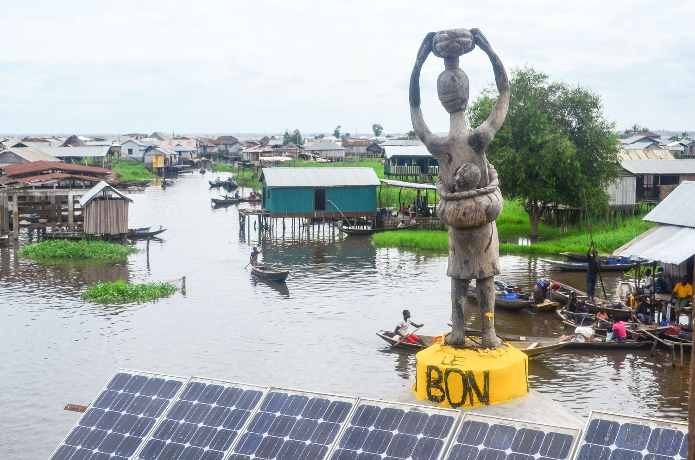
Ganvié · Wikimedia Commons
Cinquante adresses choisies, neuf territoires, trois itinéraires. Un carnet de route pour découvrir le Bénin autrement.
« Au Bénin, les plus beaux endroits ne sont pas toujours ceux que l’on montre. »
Ce carnet est né d’une conviction simple : le Bénin se découvre mieux en dehors des circuits balisés. Derrière une plage, un marché, une porte de pierre, il y a toujours une histoire que l’on ne raconte pas dans les guides classiques.
Nous avons parcouru le pays, comparé les lumières, écouté les habitants, puis retenu cinquante lieux. Cinquante, pas un de plus : ceux qui méritent le détour, le lever de soleil et parfois la patience.
Ce guide est un compagnon de route. Il se lit avant le départ, se consulte sur la piste, et se garde ensuite comme un carnet de souvenirs.
Bonne route — et prenez le temps.
Bénin, les lieux secrets
Neuf chapitres, cinquante fiches et un carnet pratique pour composer votre propre route.
Chaque chapitre s’ouvre par une carte, se poursuit par les fiches et se referme sur un carnet d’adresses.
Comment lire ce guideAvant-propos
Le Bénin tient dans un geste : une pirogue qui s’éloigne, une porte qui s’ouvre sur l’océan, un marché qui s’éveille. En apparence petit, le pays déploie une densité rare — lagunes, savanes, palais, forêts sacrées, plages sans fin.
Ce guide n’est pas un inventaire. C’est une sélection. Cinquante lieux choisis pour leur beauté, leur histoire ou leur capacité à provoquer un souvenir. Autour d’eux, un répertoire de 296 adresses pour composer votre propre route.
Neuf chapitres, neuf territoires. Chacun s’ouvre sur une carte, des repères et nos conseils de terrain. À la fin, trois itinéraires — quatre, sept ou dix jours — et un agenda pour attraper les fêtes au bon moment.
« Le Bénin ne se raconte pas. Il se traverse, lentement, du sud au nord. »
Le Bénin en neuf territoires
Du littoral aux savanes du nord, chaque numéro correspond à un chapitre et à une région du guide. Les distances restent raisonnables : le pays se traverse en une journée de route, du sud au nord.

Mode d’emploi
Chaque lieu occupe une page. Les repères sont toujours au même endroit : vous pouvez ouvrir le guide au hasard et retrouver immédiatement l’essentiel.
Se trouve facilement, se visite sans guide. Idéal pour une première découverte.
Demande un détour, une piste ou un bateau. Prévoyez du temps et de l’eau.
Peu fréquenté, parfois fragile. Venez accompagné et respectez les usages.
Patrimoine, village, musée, paysage.
Littoral, embouchure, presqu’île.
Restaurant, grill, terrasse, maquis.
Guesthouse, maison d’hôtes, hôtel.
Carnet pratique
Novembre — mars. Saison sèche, ciel clair, températures plus douces. La meilleure période pour le nord et les parcs.
Avril — juillet. Chaleurs et premières pluies. Le littoral reste agréable, les cascades se remplissent.
Août — septembre. Petite saison sèche sur la côte, souvent venteuse. Bonne période pour le sud.
Octobre — novembre. Pluies courtes, paysages verts. Les routes du nord peuvent être lentes.
Voiture avec chauffeur. La solution la plus confortable pour un itinéraire complet. Comptez 35 000 à 55 000 FCFA par jour, carburant et chauffeur inclus selon la saison.
Zem et taxi-moto. Rapides en ville, à négocier avant de monter. Casque recommandé.
Bus et taxis-brousse. Économiques entre les grandes villes ; départs le matin, durée variable.
Vols intérieurs. Cotonou — Parakou ou Natitingou selon la saison ; vérifiez les fréquences.
Monnaie. Franc CFA (XOF), arrimé à l’euro. Les cartes bancaires passent dans les hôtels et les restaurants urbains, rarement ailleurs.
Espèces. Retirez à Cotonou ou Porto-Novo ; les distributeurs se raréfient au nord. Prévoyez une réserve.
Mobile money. MTN MoMo et Moov Money sont largement utilisés. Une carte SIM locale facilite les paiements.
Pourboire. Non obligatoire ; 5 à 10 % au restaurant, un montant symbolique pour un guide ou un batelier.
Vaccins. Fièvre jaune obligatoire, hépatite A et B, typhoïde recommandés. Vérifiez les recommandations avant le départ.
Paludisme. Protection antimoustique et traitement préventif selon votre médecin.
Eau. Buvez en bouteille ou filtrée, même en ville. Évitez les glaçons dans les petits maquis.
Sécurité. Pas de problème majeur sur les itinéraires du guide ; évitez les déplacements de nuit et les zones frontalières isolées.
Saluez toujours. Un bonjour, un sourire et le nom du lieu ouvrent plus de portes qu’un billet.
Photographiez avec accord. Les visages, les cérémonies et certains lieux sacrés ne se photographient pas sans autorisation.
Tenue. Épaules et genoux couverts dans les lieux de culte, les villages traditionnels et les administrations.
Négociation. Au marché, elle fait partie du jeu ; dans les commerces et les hôtels, les prix sont affichés.
| Petit budget | Confort | Premium | |
|---|---|---|---|
| Nuit | 10–25 k | 35–70 k | 90 k + |
| Repas | 2–5 k | 8–18 k | 25 k + |
| Transport | zem · taxi-brousse | voiture partagée | voiture privée |
| Guide | 5 k / visite | 10 k / jour | 20 k + / jour |
Montants en milliers de FCFA, par personne et par jour. Les prix varient selon la saison et l’éloignement.
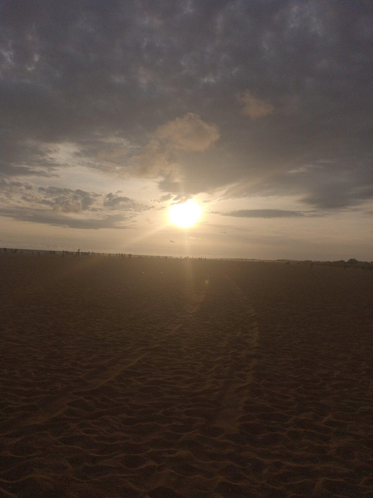
Cotonou · Wikimedia CommonsCotonou ne se visite pas comme une capitale : elle se traverse, au rythme des zems, des marchés et des couchers de soleil. Sous la ville moderne, une ville de quartiers, de cours ombragées et de plages où l’Atlantique vient chercher les pirogues.
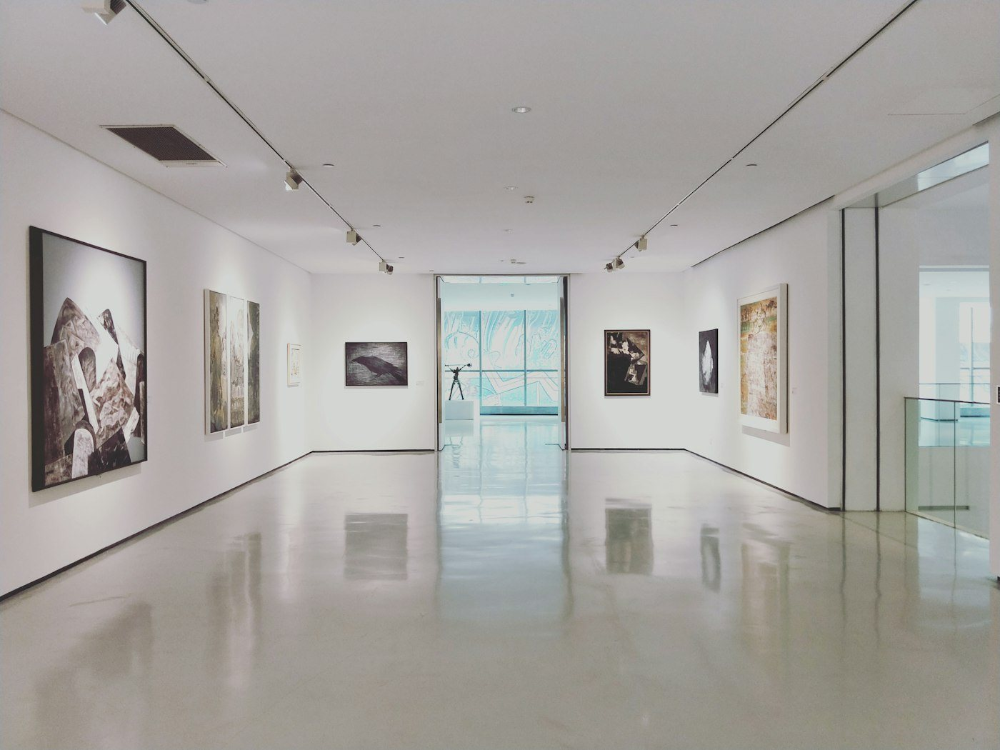
Cotonou · UnsplashCotonou · Littoral
Art contemporain africain à découvrir
Dans une villa claire de la Haie Vive, la Fondation Zinsou fait dialoguer les artistes africains contemporains avec un public qui n’a pas toujours l’habitude des musées. Les expositions changent au fil des saisons : peinture, photographie, installation, design.
On vient pour l’art, on reste pour le lieu : une cour ombragée, une librairie spécialisée et un café où l’on feuillette les catalogues en buvant un jus de bissap. C’est la première halte idéale pour comprendre où va la création béninoise.
Le conseil SecretScape
Vérifier les expositions du moment. Le café attenant vaut aussi le détour.
Fondation Zinsou, Haie Vive, Cotonou
En journée · 1 h 30 sur place.
L’entrée est souvent libre ; vérifiez le programme en ligne, les meilleures expositions ne durent que quelques semaines.
Accessible
Fréquentation moyenne
Littoral · Bénin
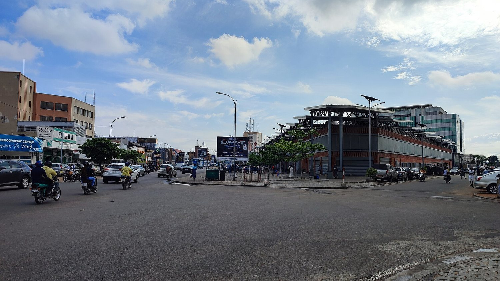
Cotonou · Wikimedia CommonsCotonou, Littoral.
Cotonou · Littoral
L'âme commerçante de Cotonou
Ganhi est le marché des objets qui ne se trouvent nulle part ailleurs : tissus wax, perles, statuettes, paniers, épices et mille ustensiles empilés dans un dédale de allées couvertes. On y vient pour acheter, mais surtout pour regarder.
Le matin, les porteurs ouvrent la journée au milieu des charrettes ; l’après-midi, l’air devient épais et les allées se remplissent. C’est un lieu de travail avant d’être un lieu de visite : demandez toujours avant de photographier.
Le conseil SecretScape
Aller tôt le matin pour éviter la foule et profiter au mieux de l'ambiance.
Quartier Ganhi, Cotonou
Prévoyez de la monnaie et marchez avec un guide local si vous négociez ; le marché se traverse mieux tôt, vers 8 h.
Prévoyez un peu de temps pour profiter pleinement de la visite et de son cadre. Une belle occasion d’enrichir votre découverte du Bénin avec une halte mémorable.
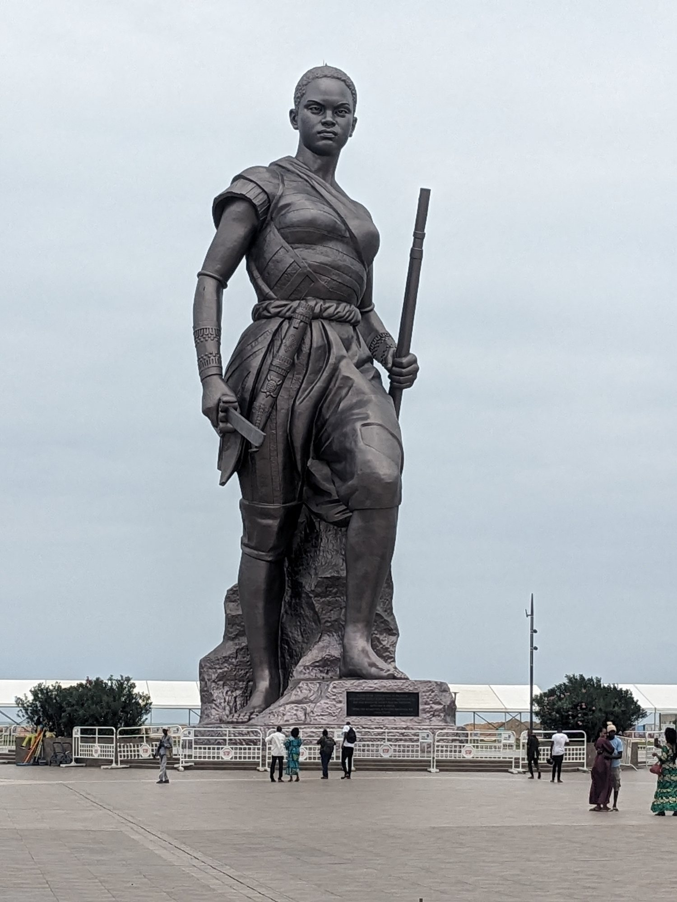
Cotonou · Wikimedia CommonsCotonou · Littoral
Le monument aux guerrières du Dahomey
Imposant monument dédié aux Amazones du Dahomey, ces guerrières du royaume d'Abomey dont la bravoure a marqué l'histoire. Érigé en hommage à la contribution des femmes dans la résistance coloniale, il est devenu l'un des symboles de Cotonou.
Le monument aux guerrières du Dahomey
Le conseil SecretScape
Le monument se trouve sur un grand carrefour : on le photographie de loin, idéalement en fin de journée quand la lumière le met en valeur.
Place de l’Amazone, carrefour des 3 Glorieuses, Cotonou
En fin de journée · 30 min sur place.
Le monument se photographie mieux en fin de journée, depuis le terre-plein ; traversez au passage piéton, le carrefour est dense.
Accessible
Fréquentation moyenne
Littoral · Bénin
Cotonou, Littoral.
Cotonou · Littoral
Le spot coucher de soleil de Cotonou
La plage de Fidjrossè est l’un des lieux de vie les plus emblématiques de Cotonou, où l’océan Atlantique, les activités balnéaires et l’ambiance locale se rencontrent. En fin de journée, le site devient particulièrement populaire pour ses couchers de soleil spectaculaires qui attirent habitants et voyageurs.
On y vient pour marcher le long du rivage, profiter de la brise marine, observer l’animation des environs et s’imprégner du rythme côtier de la ville. Entre détente, photos et moments partagés, Fidjrossè offre une expérience simple mais mémorable. C’est une halte idéale pour ressentir l’énergie de Cotonou côté mer, surtout en fin d’après-midi quand la lumière dorée transforme le paysage.
Le conseil SecretScape
Privilégiez la zone en face de Fidjrossè centre et arrivez avant 17 h pour profiter du spectacle du soleil plongeant dans l’Atlantique.
Fidjrossè plage, Cotonou
Arrivez avant 17 h 30 pour avoir une place face à l’océan ; évitez la baignade après la tombée de la nuit.
C’est une halte idéale pour ressentir l’énergie de Cotonou côté mer, surtout en fin d’après-midi quand la lumière dorée transforme le paysage.
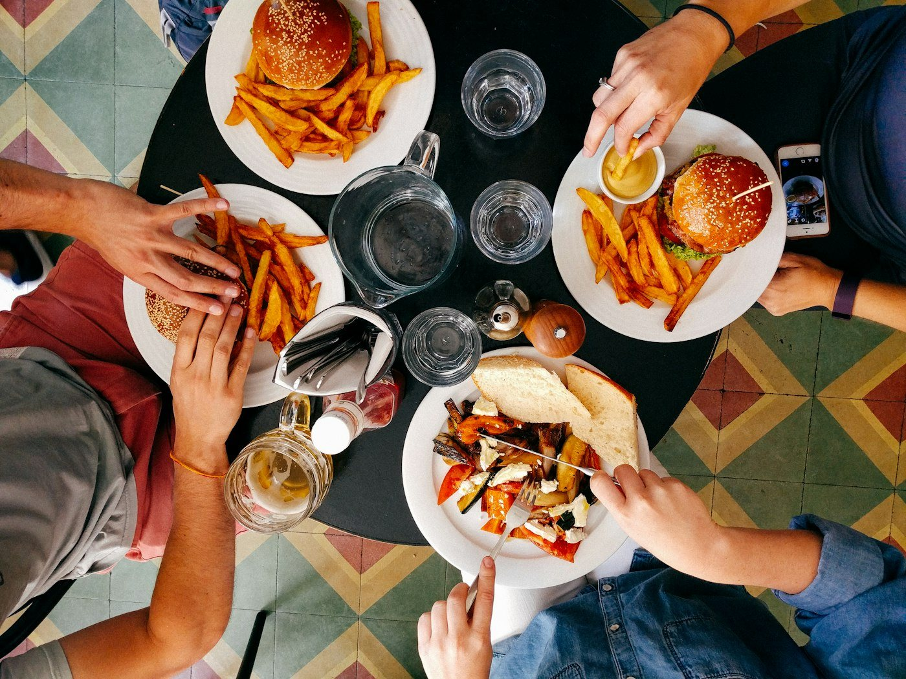
Cotonou · UnsplashTables & saveurs · Cotonou
Cuisine fusion les pieds dans le sable
Villa Kaya a l’allure d’une maison de famille posée derrière les palmiers de Fidjrossè. La carte mélange les influences — produits de la mer, légumes du jardin, épices locales — avec une précision qui ne se prend pas au sérieux.
On s’installe sous la véranda, à l’abri du vent, pour un déjeuner qui s’étire. Le service est attentionné sans être pressé ; c’est l’adresse des repas qui comptent, ceux que l’on offre à quelqu’un que l’on aime.
Le conseil SecretScape
Réservez en fin de semaine et demandez une table côté jardin ; la carte change souvent, faites-vous conseiller.
Rue Isma, Fidjrossè Houénoussou Fin Pavé, Cotonou
Idéal au coucher du soleil, avec musique en soirée.
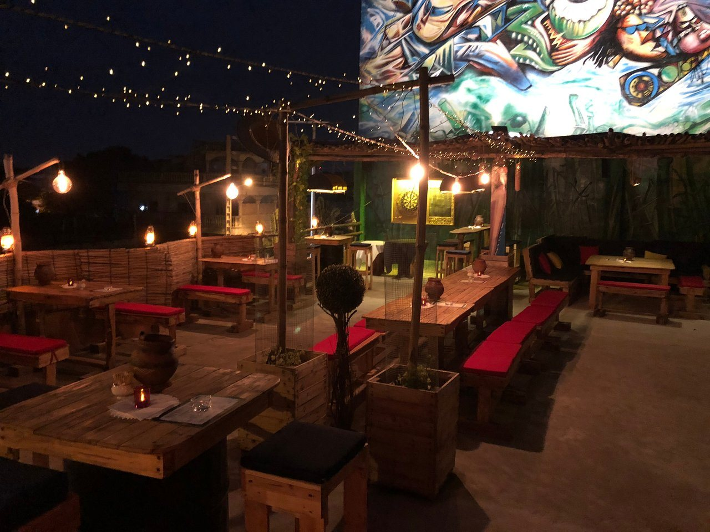
Cotonou · D.R.Tables & saveurs · Cotonou
Le grill branché de Fidjrossè
À Fidjrossè, la nuit commence souvent par un grill. Jaaba a l’ambiance des bonnes adresses de quartier : tables dehors, braises visibles, musique juste assez forte pour engager la conversation.
On y vient après la plage, pour partager un poisson grillé, des brochettes et un cocktail en regardant la rue s’animer. Le service est détendu ; l’assiette, généreuse. C’est le genre d’adresse qu’on se transmet.
Le conseil SecretScape
Arrivez avant 20 h le vendredi, ou préférez le déjeuner, plus calme, entre deux baignades.
Fidjrossè, Cotonou
Venez tôt le vendredi soir pour trouver une table, ou profitez du déjeuner entre deux baignades.
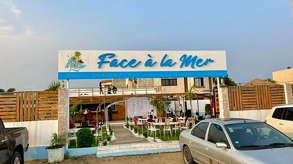
Cotonou · D.R.Tables & saveurs · Cotonou
La table de fruits de mer les pieds dans le sable
Le nom dit tout : ici, les tables regardent l’océan. Face à la Mer est une institution de Fidjrossè, ouverte aux heures où la lumière descend sur l’Atlantique et où les pêcheurs rentrent leurs filets.
La cuisine reste simple — poisson du jour, fruits de mer, riz, plantains — et c’est précisément ce qu’on vient chercher. On commande sans se presser, on reste pour le coucher de soleil, on repart les pieds pleins de sable.
Le conseil SecretScape
Réservez la première rangée pour le coucher du soleil ; le service peut être long, venez sans impatience.
Fidjrossè plage, Cotonou
Réservez une table du premier rang au coucher du soleil : le spectacle vaut le repas.
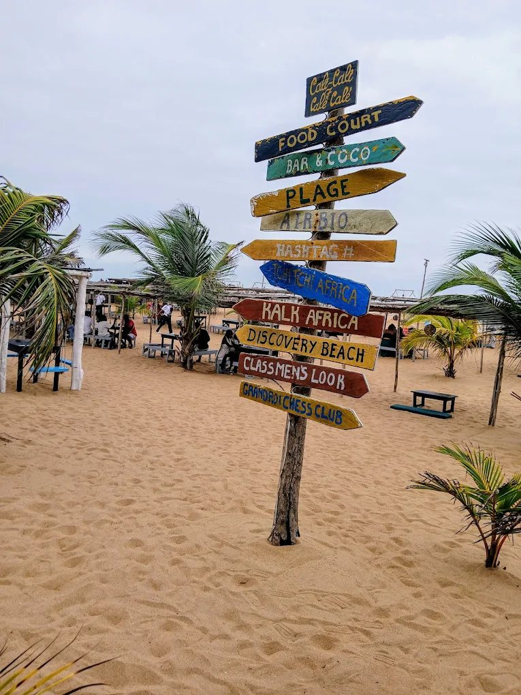
Cotonou · D.R.Tables & saveurs · Cotonou
Food court de plage à Togbin
Bar et food court les pieds dans le sable à Togbin : quatre à cinq restaurants se partagent la carte entre tacos mexicains, pokés hawaïens, poutine québécoise, poulets braisés, pizzas et barbecue. La nouvelle tendance gourmande de la côte ouest de Cotonou.
Food court de plage à Togbin
Le conseil SecretScape
Le lieu fonctionne comme un food court : commandez à plusieurs stands et installez-vous côté plage.
Plage de Togbin, entre Coco Beach et le Club des Rois, Cotonou
Le « Schmutzy ! », plat signature inventé par les fondatrices, et les tacos mexicains sont les incontournables ; ambiance plage assurée dès 11h.
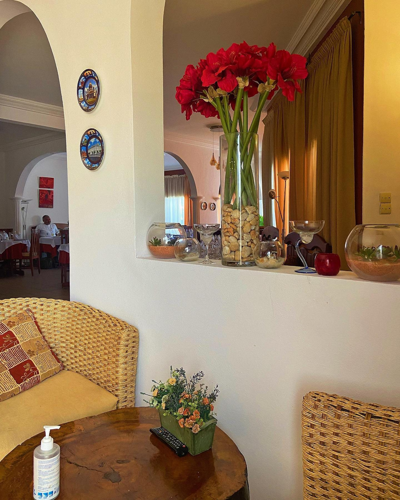
Cotonou · D.R.Tables & saveurs · Cotonou
La maison russe gourmande
Rousski Dom cultive une étrangeté réjouissante à Cotonou : une table russe, généreuse et familiale, où le bortsch fume dans des bols épais et où les conversations passent du français au russe sans prévenir.
Le décor n’a rien de minimaliste, l’accueil est chaleureux, et l’on ressort avec l’impression d’avoir dîné chez quelqu’un plutôt qu’au restaurant. Une parenthèse inattendue dans la ville.
Le conseil SecretScape
Goûtez le bortsch et les pirojki ; le soir, mieux vaut réserver, la salle est petite.
Cotonou
Le bortsch maison est la spécialité ; les portions sont copieuses, prévoyez de partager.
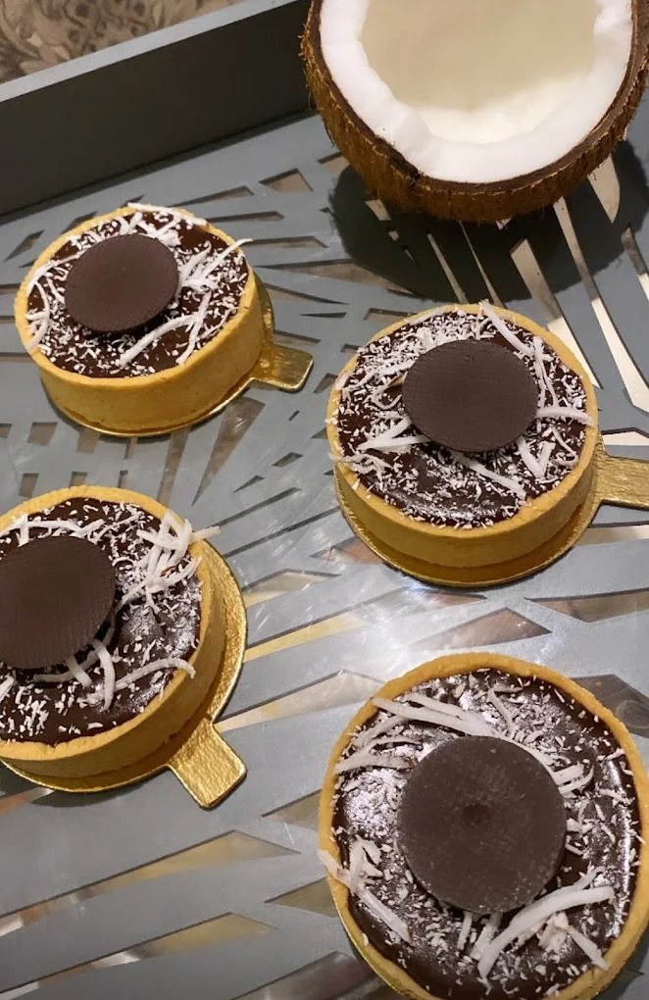
Cotonou · D.R.Tables & saveurs · Cotonou
Restaurant, pâtisserie et salon de thé
Dans le quartier de la Haie Vive, Le Petit Four est une halte de jour : viennoiseries, pâtisseries fines et salon de thé à l’ombre, pour une pause entre deux rendez-vous ou avant de reprendre la route.
Ce n’est pas une table de voyage à proprement parler, plutôt un refuge de quartier où les habitués viennent travailler, lire ou retrouver quelqu’un. Les gâteaux partent vite en fin de matinée.
Le conseil SecretScape
Arrivez avant 11 h pour le choix de pâtisseries ; le salon est plus calme en début d’après-midi.
Haie Vive, 200 m après l'agence MTN, Cotonou
Les petits-déjeuners du matin et les dîners du soir ont deux ambiances bien distinctes ; le salon de thé est parfait pour une pause sucrée.
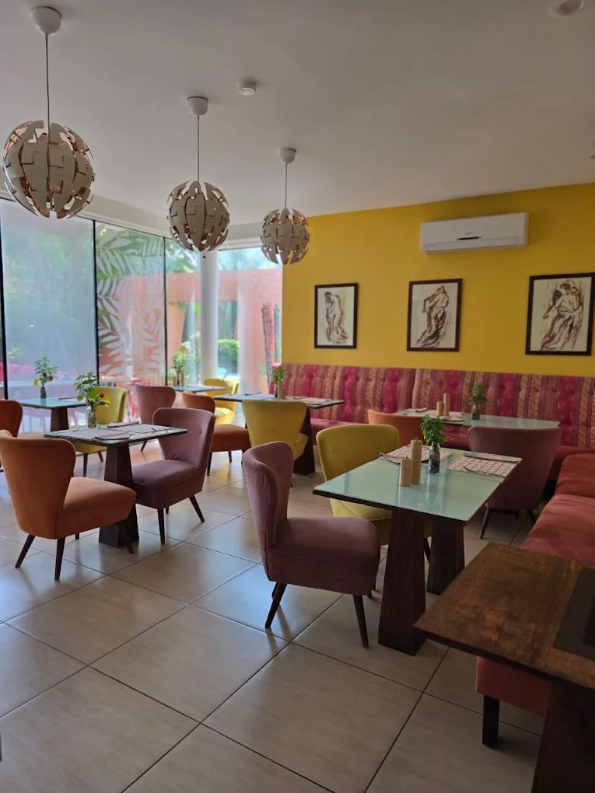
Cotonou · D.R.Où dormir · Cotonou
Hôtel de luxe sur le Boulevard de la Marina
Hôtel 4 étoiles atypique et raffiné sur le Boulevard de la Marina, bordé par l'océan Atlantique. Décoration unique, œuvres d'art contemporaines et africaines, deux piscines, terrasse panoramique et restaurant ouvert de 7h à 23h avec une cuisine à base d'ingrédients agroécologiques locaux.
Hôtel de luxe sur le Boulevard de la Marina
Le conseil SecretScape
Demandez une chambre haute côté marina ; le restaurant est une bonne option le soir.
Boulevard de la Marina, quartier Haie Vive, entre l'aéroport et les sièges de la Banque mondiale et de l'Unicef, Cotonou
Le restaurant propose un buffet de produits issus de fermes locales, et la terrasse panoramique offre une vue exceptionnelle sur le littoral.
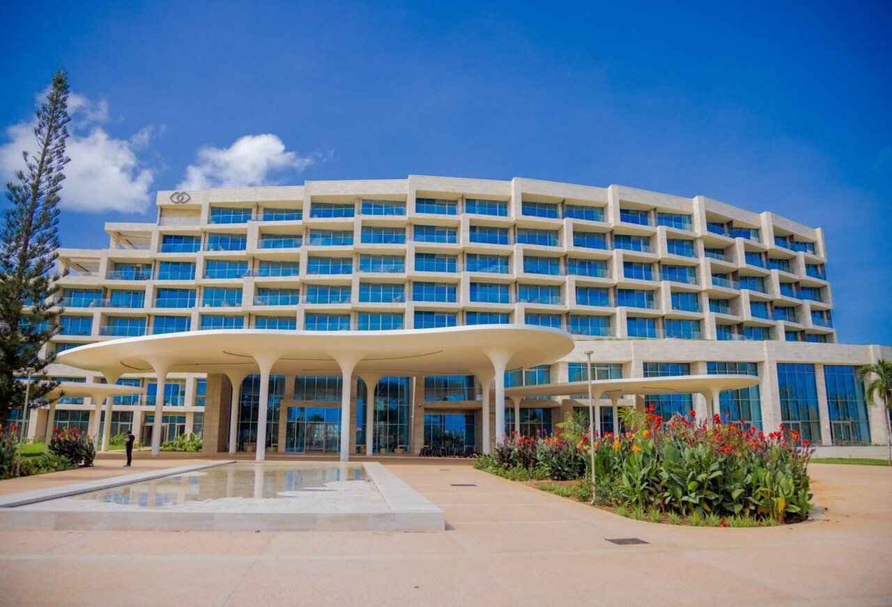
Cotonou · SecretScapeOù dormir · Cotonou
Le luxe 5 étoiles de la Marina
Le grand hôtel de standing de Cotonou sur le Boulevard de la Marina. Chambres et suites luxueuses, spa, piscine, restaurants gastronomiques et vue sur l'océan Atlantique. Une référence pour les séjours d'affaires et de prestige.
Le luxe 5 étoiles de la Marina
Le conseil SecretScape
Réservez tôt en saison haute ; le spa et la piscine se prennent à la journée pour les non-résidents.
Boulevard de la Marina, Cotonou
Son restaurant et son bar au bord de la piscine sont accessibles aux non-résidents ; idéal pour un brunch ou un cocktail face à la mer.
Entre la porte du Non-Retour et les canaux de Ganvié, l’Atlantique raconte deux histoires : celle du départ et celle de la résistance. Ici, chaque village a gardé sa mémoire, chaque plage son secret.
Sô-Ava · Atlantique
La « Venise de l'Afrique » et ses canaux secrets
Ganvié est l’une des cités lacustres les plus fascinantes d’Afrique de l’Ouest, née de l’histoire et de l’ingéniosité du peuple Tofinu. Bâtie sur pilotis au cœur du lac Nokoué, elle dévoile un paysage unique où les maisons, les marchés et les déplacements quotidiens s’organisent autour de l’eau.
Lors de la visite, vous glissez en pirogue entre les canaux, observez la vie locale et découvrez un mode d’habitat parfaitement adapté à son environnement. L’atmosphère paisible du matin, les reflets sur le lac et l’authenticité des scènes de vie font de Ganvié une expérience culturelle et humaine mémorable. C’est un lieu idéal pour comprendre l’histoire du Bénin, rencontrer ses traditions vivantes et repartir avec des images fortes d’un patrimoine à la fois fragile et remarquable.
Le conseil SecretScape
Embarquez tôt à la rive de So-Ava avant 09h00 et demandez une pirogue à pagaie, plus silencieuse et discrète, plutôt qu'à moteur.
Ganvié, commune de Sô-Ava, lac Nokoué
Tôt le matin · 3 h sur place.
Partez de Sô-Ava avant 9 h et demandez une pirogue à pagaie ; prévoyez de l’eau et un chapeau.
Bien caché
Fréquentation moyenne
Atlantique · Bénin
Ouidah, Atlantique.
Ouidah · Atlantique
Le chemin de mémoire qui mène à l'océan
La Route des Esclaves et la Porte du Non-Retour forment l’un des parcours mémoriels les plus importants du Bénin. Ce chemin symbolique relie la ville à l’océan et retrace, à travers ses étapes et ses monuments, une page douloureuse mais essentielle de l’histoire.
La marche jusqu’à la plage invite au recueillement et à la compréhension. Face à l’Atlantique, le monument de la Porte du Non-Retour impose une forte émotion par sa présence et sa portée symbolique. C’est un lieu de mémoire à visiter avec respect, qui donne de la profondeur à la découverte d’Ouidah et aide à mieux saisir l’histoire du pays et de la diaspora.
Le conseil SecretScape
Parcourez la route à pied à marée basse et gardez le silence à la Porte du Non-Retour : c'est un lieu de mémoire, pas un point selfie.
Route des Esclaves, plage d'Ouidah
Parcourez la route à pied tôt le matin ; le site se visite dans le recueillement, pas en maillot de bain.
C’est un lieu de mémoire à visiter avec respect, qui donne de la profondeur à la découverte d’Ouidah et aide à mieux saisir l’histoire du pays et de la diaspora.
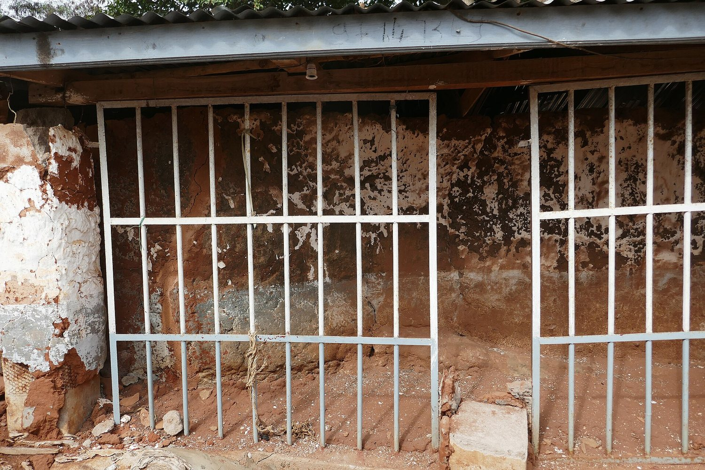
Ouidah · Wikimedia CommonsOuidah · Atlantique
Le sanctuaire vivant du vaudou
Le Temple des Pythons est l’un des lieux emblématiques d’Ouidah, ville profondément liée à l’histoire spirituelle et culturelle du Bénin. Ici, le python royal est un animal sacré, respecté et intégré aux traditions vodun qui façonnent l’identité de la région.
La visite offre une découverte à la fois culturelle et symbolique : architecture du lieu, explications sur les pratiques locales et rencontre avec un patrimoine vivant. C’est une expérience qui invite au respect, à la curiosité et à une meilleure compréhension des croyances du pays. Pour les voyageurs, c’est une halte marquante qui complète parfaitement la découverte d’Ouidah et de sa mémoire.
Le conseil SecretScape
Présentez-vous avec respect et apportez une offrande simple ; le prêtre accepte de faire toucher le python sacré aux visiteurs de bonne volonté.
Temple des Pythons, centre historique d'Ouidah
En matinée · 45 min sur place.
La visite se fait avec un guide du temple ; ne touchez pas les serpents et demandez avant de photographier.
Accessible
Fréquentation moyenne
Atlantique · Bénin
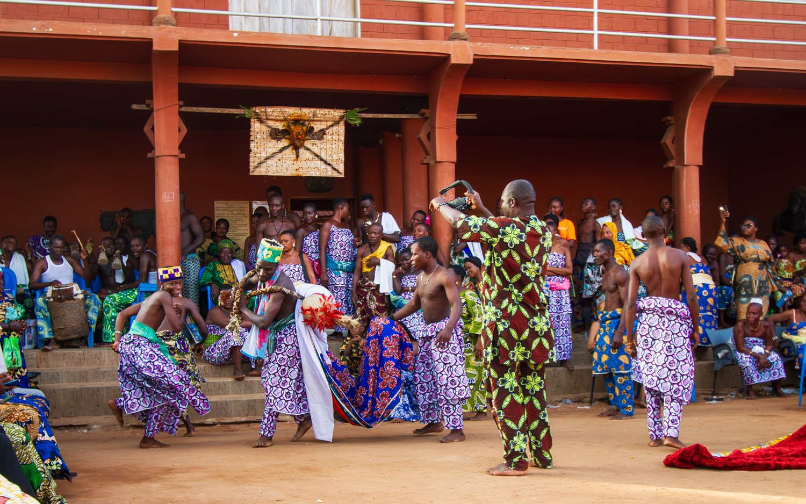
Ouidah · Wikimedia CommonsOuidah, Atlantique.
Ouidah · Atlantique
Les trésors du culte des esprits
Le Musée International du Vodun est un espace dédié à la compréhension du vodun, une dimension essentielle de la culture béninoise. À travers objets rituels, sculptures, autels et pièces symboliques, il offre une lecture riche des croyances, des pratiques et des représentations spirituelles.
La visite permet d’approcher ce patrimoine avec plus de contexte et de nuance, loin des clichés. Les explications et la mise en scène des collections aident à saisir la profondeur historique et culturelle de cette tradition vivante. C’est une étape importante à Ouidah pour les voyageurs qui souhaitent découvrir le Bénin dans toute sa diversité culturelle et spirituelle.
Le conseil SecretScape
Demandez au conservateur de vous montrer la salle des objets rituels : les explications valent le détour.
Centre historique d'Ouidah
Prévoyez une heure et demie ; certains objets ne se photographient pas, demandez au guide.
C’est une étape importante à Ouidah pour les voyageurs qui souhaitent découvrir le Bénin dans toute sa diversité culturelle et spirituelle.
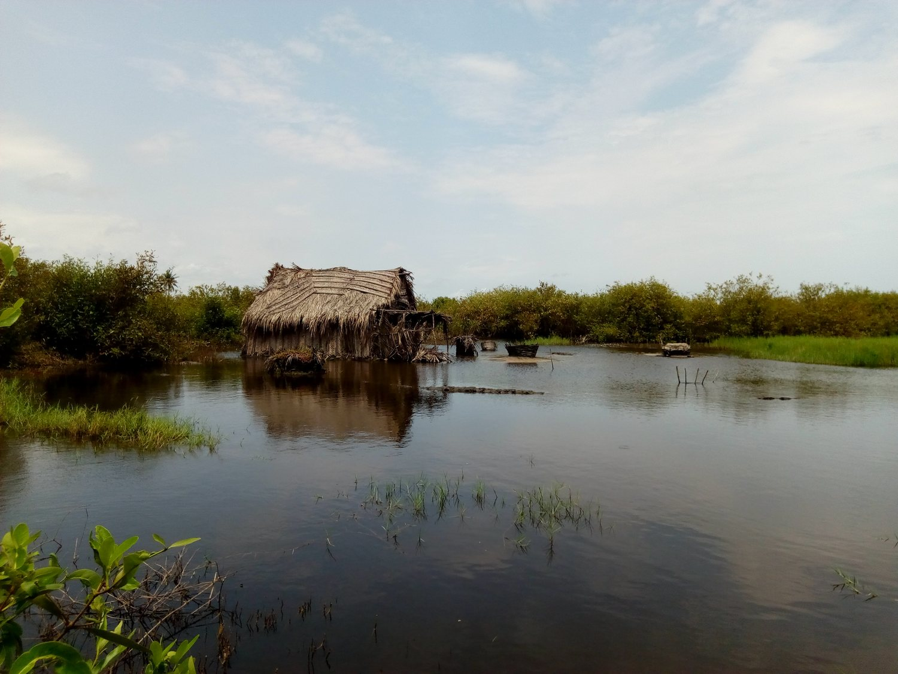
Ouidah · Wikimedia CommonsOuidah · Atlantique
Là où la Route des Esclaves touche l'océan
Au bout de la Route des Esclaves, la plage de Djégbadji garde la mémoire de l'histoire : c'est ici que les captifs embarquaient vers les Amériques, face à la Porte du Non-Retour. Aujourd'hui, le site mêle recueillement, villages de pêcheurs et longues étendues de sable.
Là où la Route des Esclaves touche l'océan
Le conseil SecretScape
Louez une pirogue à Djégbadji pour longer la côte jusqu'à la Porte du Non-Retour : la vue sur le mémorial depuis la mer est saisissante.
Djégbadji, commune de Ouidah
En début de matinée · 2 h 30 sur place.
L’accès se fait par la plage ou par la route ; prévoyez de l’eau, la baignade reste prudente.
Bien caché
Fréquentation moyenne
Atlantique · Bénin
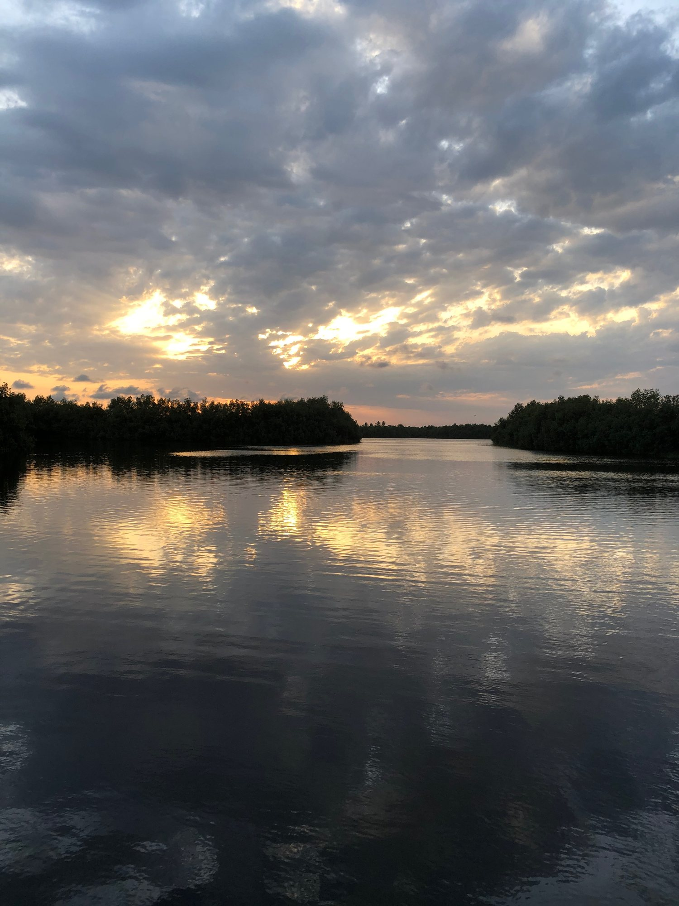
Avlékété · Wikimedia CommonsAvlékété, Atlantique.
Avlékété · Atlantique
Le secret des pêcheurs d'Avlékété
À l'ouest de Ouidah, la plage d'Avlékété est le fief des pêcheurs et de leurs pirogues colorées. Les crépuscules y sont d'une rare intensité et le littoral, encore sauvage, est surveillé par les vestiges des épaves échouées dans le sable.
Le conseil SecretScape
Arrivez à marée montante pour voir les pirogues rentrer du large, puis restez pour le crépuscule : c'est le spectacle préféré des habitants.
Avlékété, commune de Ouidah
Venez en fin de journée, quand les pirogues rentrent ; l’endroit est isolé, ne restez pas après la nuit.
À l'ouest de Ouidah, la plage d'Avlékété est le fief des pêcheurs et de leurs pirogues colorées.
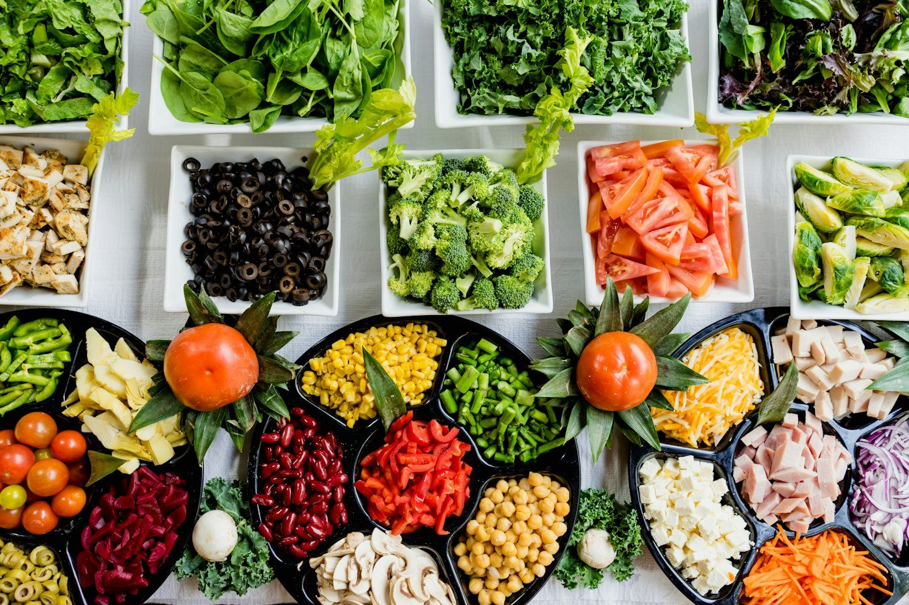
Ouidah · UnsplashTables & saveurs · Ouidah
Cuisine locale et internationale
Le restaurant-bar du Musée du Soleil prolonge la visite par une table simple, installée dans l’enceinte de la maison. On y déjeune à l’ombre, entre les murs patinés et les objets de collection.
La carte est courte, les produits locaux, le rythme celui d’Ouidah : lent, à l’abri de la chaleur. C’est une halte idéale après la Route des Esclaves, quand on a besoin de silence et d’un verre frais.
Le conseil SecretScape
Combinez la visite du musée et le déjeuner ; demandez la terrasse, plus fraîche que la salle.
À côté de la Basilique et en face de la Fondation Zinsou, Ouidah
Idéal pour se restaurer après la visite du musée.
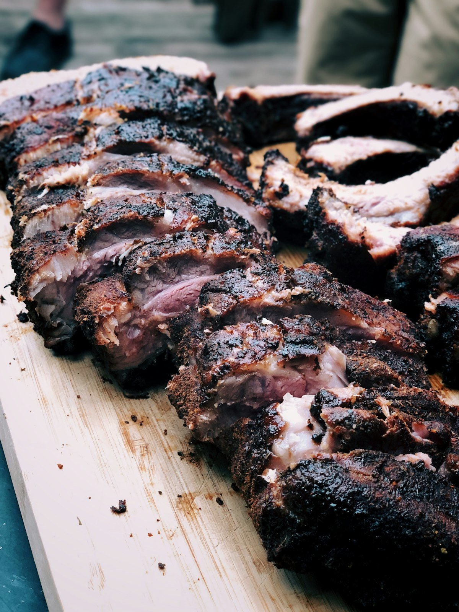
Ouidah · UnsplashTables & saveurs · Ouidah
Grillades et cuisine africaine
Hakuna Matata assume l’esprit maquis : grillades au feu de bois, plats africains généreux, tables sans chichis et service qui prend son temps. C’est une adresse pour finir la journée en groupe.
Les soirs de week-end, la musique monte et la terrasse se remplit. On y vient moins pour la gastronomie que pour l’ambiance, et c’est très bien ainsi.
Le conseil SecretScape
Commandez les grillades et arrivez avant 20 h ; les soirs de concert, la terrasse est vite complète.
Route des Pêches, derrière l'IRSP, quartier Agondji Kpevi, Ouidah
Ouvert tous les jours de 9h à 23h.
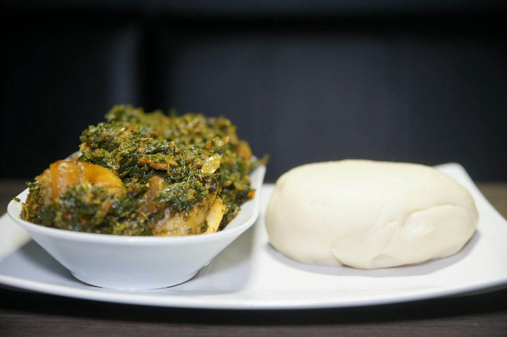
Ouidah · UnsplashTables & saveurs · Ouidah
Cuisine africaine de qualité
Kolè propose une cuisine africaine franche, servie dans une salle simple du centre d’Ouidah. Pas de mise en scène : des plats mijotés, du riz, du poisson, et des prix qui restent raisonnables.
C’est l’adresse des déjeuners de passage, quand on veut manger local sans cérémonie avant de reprendre la route vers la côte. L’accueil est discret, le service efficace.
Le conseil SecretScape
Venez le midi, la carte du soir est plus courte ; demandez le plat du jour.
Ouidah
L'une des meilleures tables d'Ouidah selon les voyageurs.
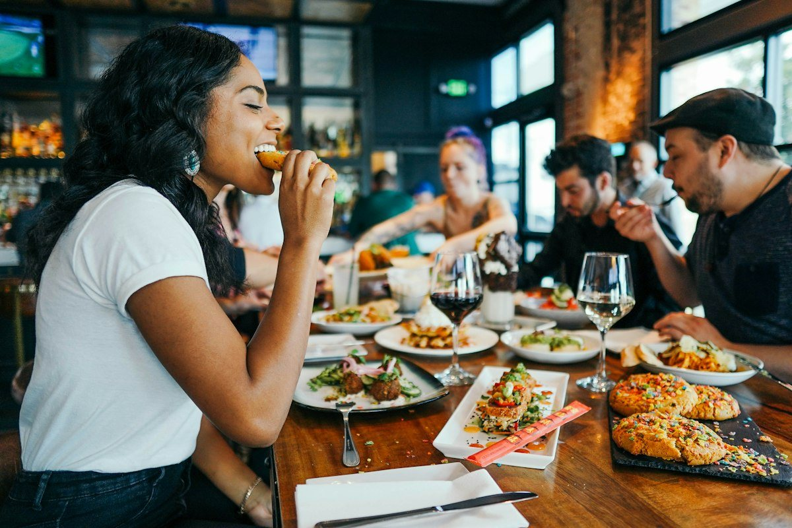
Ouidah · UnsplashTables & saveurs · Ouidah
Terrasse avec vue sur la Basilique
Alozo est une terrasse posée près de la basilique, avec vue sur les toits et l’animation tranquille d’Ouidah. On y monte pour un grill, une bière fraîche et la lumière de fin de journée.
La carte reste dans le registre du grill et des plats à partager ; l’intérêt du lieu tient autant à la vue qu’à l’assiette. Une bonne étape avant ou après la visite du centre historique.
Le conseil SecretScape
Montez en fin d’après-midi pour la lumière ; la terrasse est petite, arrivez tôt ou réservez.
936P+936, à côté de la Basilique de Ouidah, Ouidah
Idéal pour un repas au calme près du centre historique.
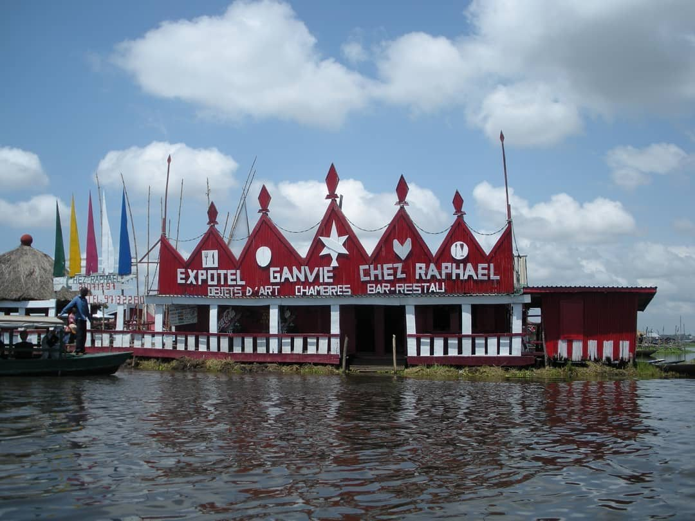
Ganvié · SecretScapeTables & saveurs · Ganvié
Un repas sur pilotis au milieu du lac
Chez Raphaël, à Ganvié, on déjeune au-dessus de l’eau. Les tables sont posées sur une terrasse de bois, à hauteur de pirogue, et le poisson arrive du lac presque directement dans l’assiette.
Le cadre fait la moitié du repas : les canaux défilent, les enfants pagayent, le vent passe. La cuisine est simple et l’adresse touristique — mais l’expérience du lac, elle, reste intacte.
Le conseil SecretScape
Prévenez de votre venue avec le batelier ; le déjeuner se prend tôt, avant le retour en pirogue.
Village lacustre de Ganvié
Prévenez votre piroguier à l'aller et prévoyez le temps du repas : c'est une halte incontournable du tour de Ganvié.
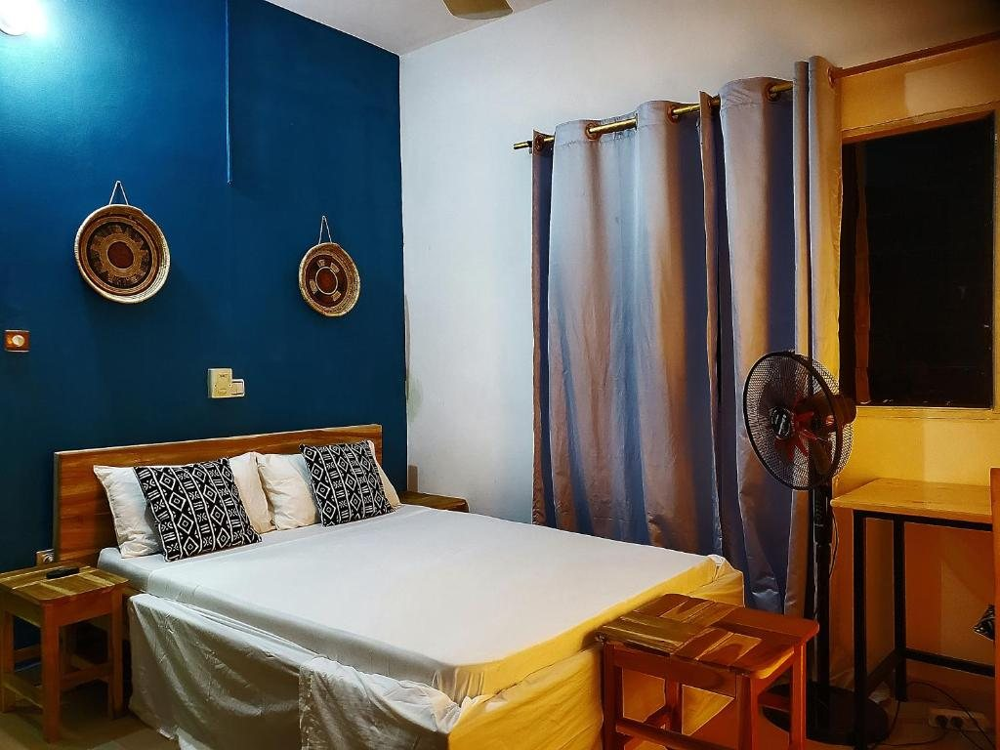
Ouidah · SecretScapeOù dormir · Ouidah
La guesthouse en plein centre historique
Au cœur de Ouidah est une maison de ville transformée en guesthouse, à deux pas de la basilique et des ruelles historiques. Les chambres s’organisent autour d’une cour ombragée, loin du bruit de la côte.
On vient pour la position : tout se fait à pied, la Route des Esclaves, le marché, les musées. Le soir, la ville se vide et la maison retrouve son calme.
Le conseil SecretScape
Demandez une chambre côté cour ; le stationnement se fait dans la rue, arrivez avant la nuit.
Rue du Marché, Ouidah
Le meilleur point de chute pour s'imprégner de l'âme vodun de la ville.
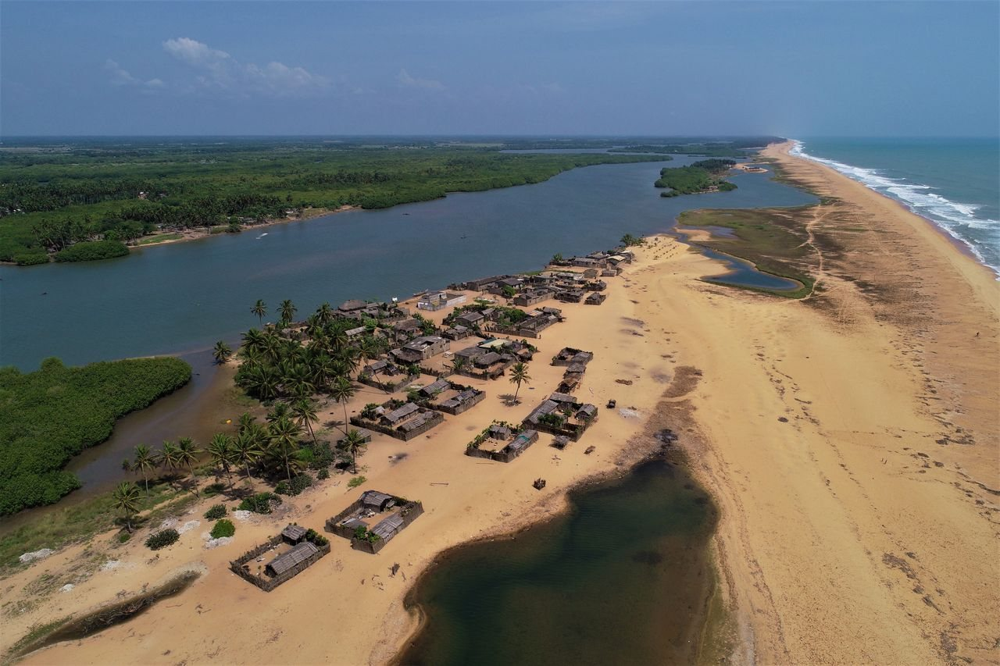
Grand-Popo · Wikimedia CommonsLe Mono descend du nord et vient mourir dans l’Atlantique, en dessinant un delta de sable et de lumière. Entre Grand-Popo et la presqu’île d’Avlo, le littoral ralentit, les villages s’étirent, les jours se ressemblent.
Grand-Popo · Mono
Là où le fleuve Mono embrasse l'Atlantique
La Bouche du Roi offre l’un des paysages naturels les plus saisissants du littoral béninois. Ici, le fleuve Mono rencontre l’océan Atlantique dans un jeu de courants, de bancs de sable et de lumière qui change au fil des marées.
Le site séduit par son caractère sauvage et préservé : oiseaux migrateurs, étendues dégagées, souffle du vent et ambiance presque hors du temps. C’est un lieu parfait pour la contemplation, la photographie et les promenades au calme, loin de l’agitation. Au lever ou au coucher du soleil, les couleurs transforment le décor et rendent l’expérience encore plus spectaculaire. Une halte incontournable pour découvrir la beauté brute de Grand-Popo.
Le conseil SecretScape
Longez la plage vers l'est après le village d'Agoué, ou remontez le fleuve en pirogue à la marée basse pour voir le chenal se reformer.
Bouche du Roi, commune de Grand-Popo
Au lever ou au coucher du soleil · 2 h sur place.
Vérifiez l’heure de la marée avant de partir ; l’accès change avec l’eau, empruntez un guide local.
Secret d’initié
Peu fréquenté
Mono · Bénin
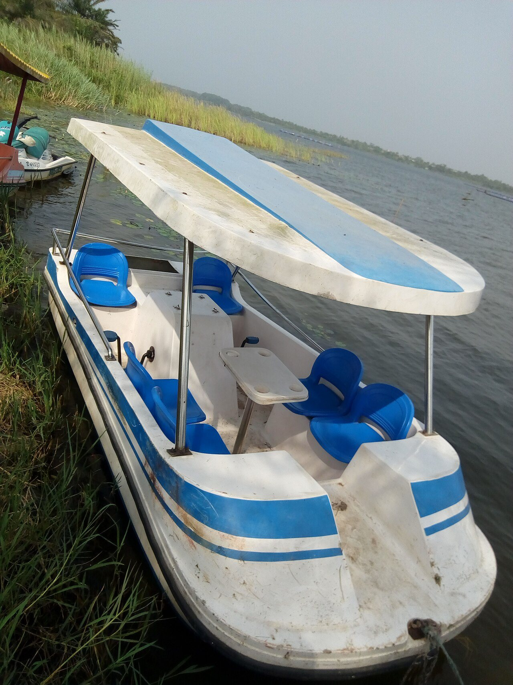
Grand-Popo · Wikimedia CommonsGrand-Popo, Mono.
Grand-Popo · Mono
Un lac sombre et mystérieux entre cocotiers
Le lac Toho, aux eaux sombres et profondes, est un lieu chargé de mystère et de traditions. Bordé de palmeraies et de villages de pêcheurs, il offre une immersion dans un paysage paisible où la nature et les croyances locales se rencontrent.
Une balade sur le lac permet d’observer le quotidien des communautés riveraines, d’écouter les récits liés aux caïmans sacrés et de ressentir la quiétude particulière de cet espace. La lumière de fin de journée y crée une ambiance douce et envoûtante. C’est une étape idéale pour les voyageurs en quête d’authenticité, de culture locale et de moments calmes au cœur du Mono.
Le conseil SecretScape
Demandez à un pêcheur d'Ahozon de vous conduire vers l'îlot au centre du lac où vivent les caïmans sacrés, le bout de bois de maniguette en offrande.
Ahozon, commune de Grand-Popo
La traversée se négocie sur place ; respectez les zones sacrées et les caïmans, ne descendez pas seul.
C’est une étape idéale pour les voyageurs en quête d’authenticité, de culture locale et de moments calmes au cœur du Mono.
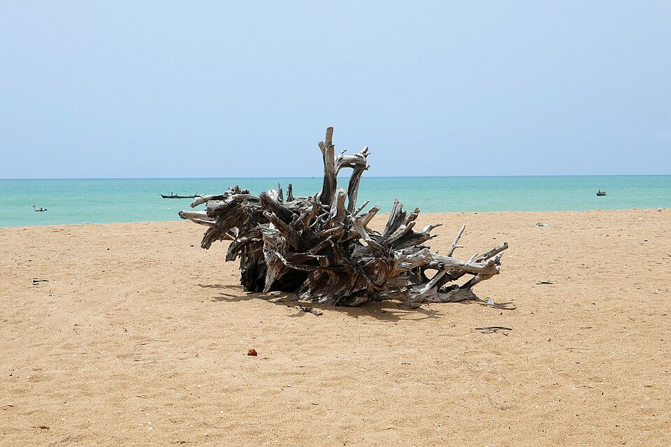
Grand-Popo · Wikimedia CommonsGrand-Popo · Mono
Le lagon face à l'Atlantique
Longue de plusieurs kilomètres, la grande plage de Grand-Popo est la plus fameuse du Bénin : sable clair, cocotiers, anciens forts coloniaux et village de pêcheurs se succèdent entre le lagon et l'océan. Entre deux baignades, on y croise les tortues marines lors des pontes.
Le lagon face à l'Atlantique
Le conseil SecretScape
Explorez la plage à l'est du village en fin de journée : la partie la plus sauvage, où l'on suit les traces des tortues dans le sable.
Grand-Popo, département du Mono
Tôt le matin ou en fin d'après-midi · 2 h 30 sur place.
La plage est longue et sans ombre : venez tôt ou en fin d’après-midi, avec de l’eau.
Accessible
Fréquentation moyenne
Mono · Bénin
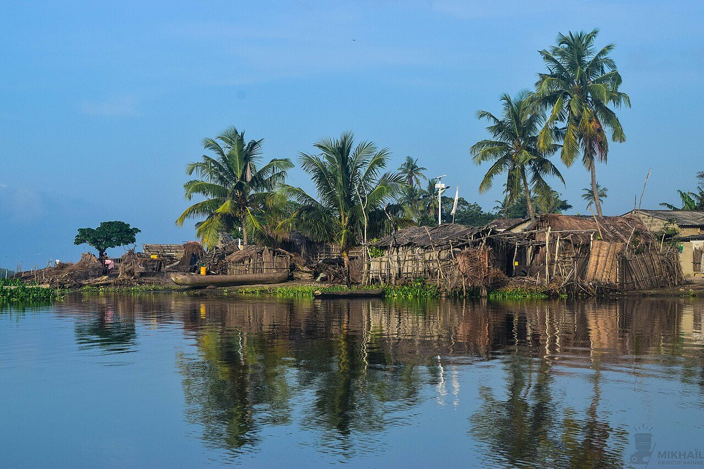
Avlo · Wikimedia CommonsAvlo, Mono.
Avlo · Mono
Le bout du monde de Grand-Popo
En face de Grand-Popo, la presqu'île d'Avlo vit au rythme de la pêche et du fumage du poisson. Le village, serré entre lagon et océan, est un écrin de vie traditionnelle que quelques piroguiers seulement viennent rejoindre.
Le conseil SecretScape
Traversez en pirogue depuis le débarcadère de Grand-Popo et laissez-vous guider par les femmes qui fument le poisson : la visite est aussi un partage.
Avlo, commune de Grand-Popo
Prenez un guide du village pour rejoindre la presqu’île ; la piste est sablonneuse et longue.
En face de Grand-Popo, la presqu'île d'Avlo vit au rythme de la pêche et du fumage du poisson.
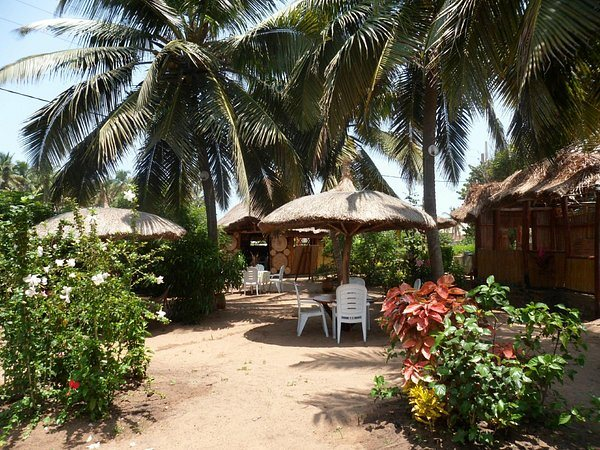
Grand-Popo · D.R.Tables & saveurs · Grand-Popo
Un cocon gourmand au cœur de Grand-Popo
La Boca del Rio s’installe dans un jardin de Grand-Popo, à quelques pas de l’embouchure du Mono. On y mange du poisson, on boit un verre, et l’on reste plus longtemps que prévu.
L’esprit est celui d’une maison de bord de fleuve : bois, ombre, ventilateurs, musique douce. C’est une adresse de fin de journée, quand la chaleur tombe et que le jardin s’allume.
Le conseil SecretScape
Réservez le soir en saison haute ; demandez une table au fond du jardin, plus calme.
Grand-Popo
Le déjeuner au jardin est un moment magique ; goûtez leurs desserts maison, réputés.
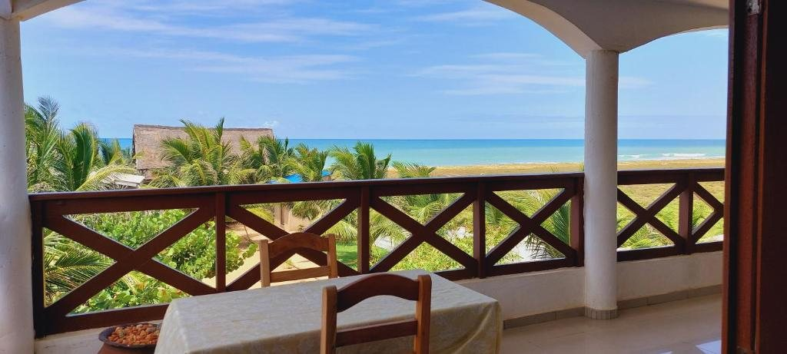
Grand-Popo · SecretScapeOù dormir · Grand-Popo
La guesthouse de charme sur le sable
Bambou Beach est une guesthouse les pieds dans le sable, sur la côte de Grand-Popo. Les bungalows sont simples, ventilés, et l’on s’endort au bruit des vagues.
C’est une adresse de décompression : pas de programme, des hamacs, un bar, la plage qui s’étire. Idéale pour couper un itinéraire entre Ouidah et la frontière togolaise.
Le conseil SecretScape
Réservez côté plage et prévoyez de l’anti-moustique ; l’accès se fait par une piste, arrivez avant la nuit.
Quartier Avloh, Grand-Popo
Pause-déjeuner face à l'océan recommandée, même sans y dormir.
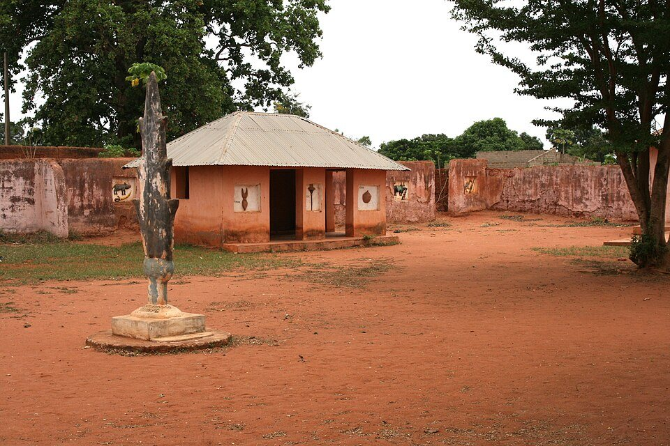
Abomey · Wikimedia CommonsAbomey conserve la trace de l’un des royaumes les plus puissants d’Afrique de l’Ouest. Derrière les murs de terre des palais, les bas-reliefs racontent des guerres, des alliances et un art de gouverner qui a marqué tout le pays.
Abomey · Zou
Les hauts lieux du royaume du Dahomey
Les Palais Royaux d’Abomey sont un lieu majeur pour comprendre l’histoire politique, culturelle et artistique du royaume du Dahomey. Inscrit au patrimoine mondial de l’UNESCO, le site rassemble des témoignages puissants à travers son architecture, ses bas-reliefs et ses espaces cérémoniels.
La visite permet de plonger dans l’épopée des rois d’Abomey, de découvrir les symboles du pouvoir et d’apprécier la richesse des traditions qui ont marqué le Bénin. Chaque élément du site raconte une part d’histoire, entre mémoire, art et transmission. C’est une étape essentielle pour tout voyageur souhaitant explorer l’héritage historique du pays avec profondeur et contexte.
Le conseil SecretScape
À la tombée du jour, le quartier des tanneries derrière le musée s'anime : c'est là que bat le vrai cœur de la ville ancienne.
Site des Palais Royaux, centre d'Abomey
En matinée avant la chaleur · 2 h sur place.
Visitez avec un guide officiel ; le billet couvre plusieurs palais, gardez-le toute la visite.
Accessible
Fréquentation moyenne
Zou · Bénin
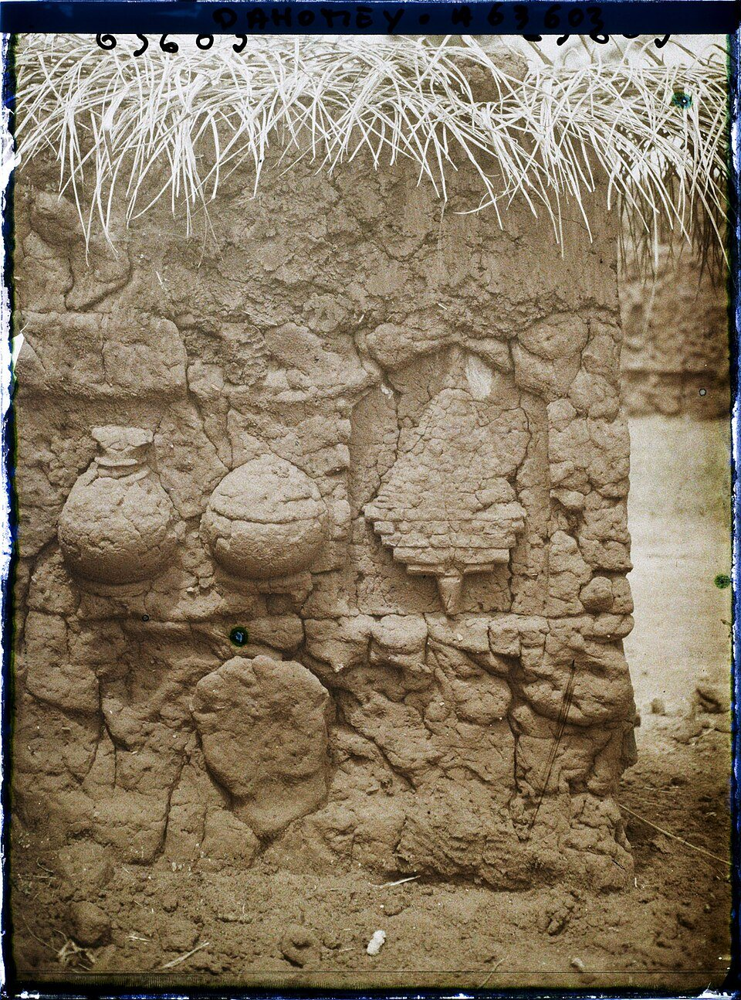
Abomey · Wikimedia CommonsAbomey, Zou.
Abomey · Zou
Les récits du royaume sculptés dans la terre
Dans les ruelles du quartier historique, des artisans perpétuent l'art des bas-reliefs polychromes qui ornaient les palais royaux. Éléphants, jarres, écheveaux et symboles de pouvoir prennent forme sous leurs mains, loin des vitrines du musée.
Le conseil SecretScape
Passez par les ateliers familiaux derrière le palais de Guézo et demandez à voir la préparation des pigments : c'est là que se joue la vraie transmission.
Quartier Gbécon-Hounli, Abomey
Les ateliers se visitent en matinée ; achetez directement aux artisans si vous voulez soutenir la transmission.
Dans les ruelles du quartier historique, des artisans perpétuent l'art des bas-reliefs polychromes qui ornaient les palais royaux.
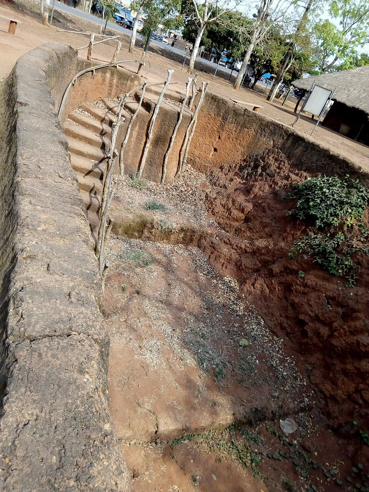
Bohicon · Wikimedia CommonsBohicon · Zou
Un refuge troglodyte vieux de plusieurs siècles
Le village souterrain d’Agongointo est un site historique fascinant qui révèle une forme d’ingéniosité remarquable face aux conflits du passé. Creusées dans la terre, ses galeries et ses espaces aménagés servaient de refuge et permettaient d’organiser la vie en période d’insécurité.
La visite offre une immersion concrète dans cette histoire : on y découvre l’agencement des lieux, les usages des différentes zones et les conditions de vie dans cet habitat atypique. C’est une expérience à la fois pédagogique et impressionnante. Pour les voyageurs intéressés par l’histoire du Zou et les patrimoines méconnus, c’est une étape très enrichissante.
Le conseil SecretScape
Descendez avec une lampe frontale et des chaussures fermées : les galeries, fraîches et sombres, se parcourent mieux en petit groupe.
Zounkpinfè, route d'Abomey, Bohicon
Tôt le matin · 1 h 30 sur place.
Prévoyez une lampe et de bonnes chaussures ; le site est partiellement souterrain et glissant.
Bien caché
Peu fréquenté
Zou · Bénin
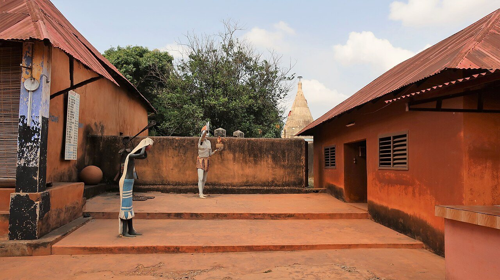
Porto-Novo · Wikimedia CommonsPorto-Novo avance à son propre rythme, loin de l’agitation de Cotonou. Architecture afro-brésilienne, mosquée aux mille couleurs, ateliers de poterie : la capitale administrative garde une élégance de ville ancienne.
Porto-Novo · Ouémé
La résidence du roi Toffa devenue musée
Le Musée Honmè, ancien palais royal de Porto-Novo, est un lieu clé pour découvrir l’histoire du royaume de Hogbonou et l’héritage du roi Toffa. Le site conserve des objets, témoignages et espaces qui racontent la vie politique et culturelle de la cour.
En parcourant le musée, on comprend mieux l’organisation du pouvoir, les traditions royales et l’évolution historique de la ville. L’ambiance du lieu, empreinte de mémoire, donne une dimension concrète aux récits du passé. C’est une visite idéale pour enrichir un séjour à Porto-Novo et mieux saisir l’identité historique de la capitale.
Le conseil SecretScape
Le musée organise parfois des événements culturels : renseignez-vous la veille pour assister à une représentation dans la cour royale.
Quartier Avassa, Porto-Novo
En matinée · 1 h 15 sur place.
Le musée se visite en matinée ; combinez avec la Grande Mosquée, à quelques minutes à pied.
Accessible
Peu fréquenté
Ouémé · Bénin
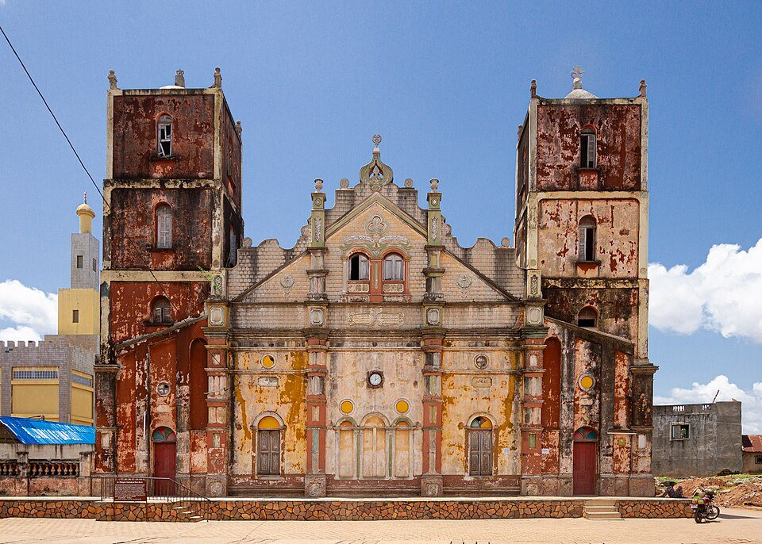
Porto-Novo · Wikimedia CommonsPorto-Novo, Ouémé.
Porto-Novo · Ouémé
Le joyau architectural afro-brésilien
La Grande Mosquée de Porto-Novo est l’un des édifices les plus remarquables de la ville, connue pour son architecture afro-brésilienne distinctive. Sa façade, ses formes et ses couleurs témoignent des influences croisées qui ont façonné l’identité urbaine et culturelle de Porto-Novo.
Au-delà de sa valeur architecturale, le lieu reste un espace de culte actif, ce qui lui confère une dimension vivante et respectée. L’observer permet de mieux comprendre l’histoire des retours afro-brésiliens et leur empreinte durable sur la capitale. C’est une visite courte mais marquante, idéale pour enrichir un parcours patrimonial en ville.
Le conseil SecretScape
Admirez la façade à la lumière du matin ; pour l'intérieur, présentez-vous auprès de l'imam avec respect hors des heures de prière.
Centre-ville de Porto-Novo
La visite s’arrête aux espaces ouverts aux non-musulmans ; habillez-vous couvert et demandez l’autorisation.
C’est une visite courte mais marquante, idéale pour enrichir un parcours patrimonial en ville.
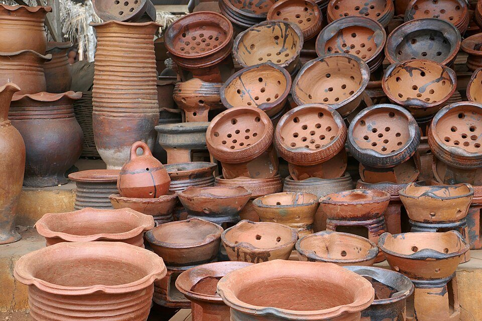
Adjarra · Wikimedia CommonsAdjarra · Ouémé
La terre façonnée par les mains des femmes
À Adjarra, la terre se travaille encore à la main, sans tour électrique. Les potières façonnent les jarres, les canaris et les ustensiles de cuisine selon des gestes transmis de mère en fille, puis les font sécher au soleil avant une cuisson à ciel ouvert.
On assiste à un savoir-faire discret, loin des démonstrations pour touristes. Les pièces finies s’alignent devant les ateliers ; certaines partent vers les marchés de Porto-Novo, d’autres restent dans les cours, prêtes à servir.
Le conseil SecretScape
Demandez à assister au tournage plutôt que d'acheter au bord de la route : les artisanes acceptent volontiers si vous prenez le temps de discuter.
Adjarra, commune d'Adjarra
En matinée · 1 h 15 sur place.
Demandez la permission avant de filmer ; une petite participation pour la démonstration est appréciée.
Secret d’initié
Peu fréquenté
Ouémé · Bénin
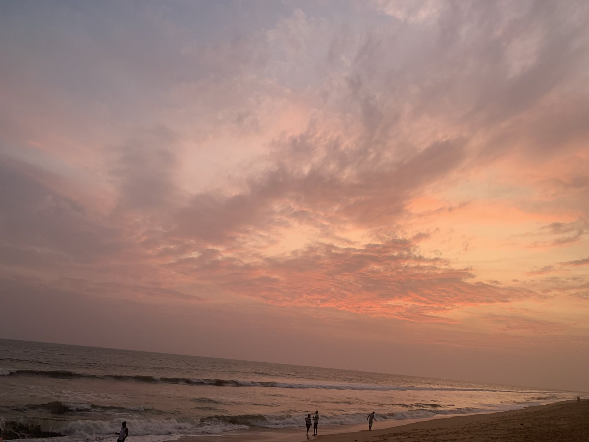
Sèmè-Kpodji · Wikimedia CommonsSèmè-Kpodji, Ouémé.
Sèmè-Kpodji · Ouémé
Le coucher de soleil préservé de l'Ouémé
À une vingtaine de kilomètres à l'est de Cotonou, la plage de Sèmè-Kpodji reste l'une des plus calmes du littoral. Sable clair, cocotiers et villages de pêcheurs composent un décor authentique, loin de l'animation de la route des pêches.
Le conseil SecretScape
Depuis la route d'Ekpè, empruntez une piste vers le sud jusqu'à la côte : le plus beau spectacle est le soleil qui se couche sur les pirogues à la marée basse.
Sèmè-Kpodji, département de l'Ouémé
Venez en fin d’après-midi pour le coucher de soleil ; la plage est fréquentée, gardez vos affaires près de vous.
À une vingtaine de kilomètres à l'est de Cotonou, la plage de Sèmè-Kpodji reste l'une des plus calmes du littoral.
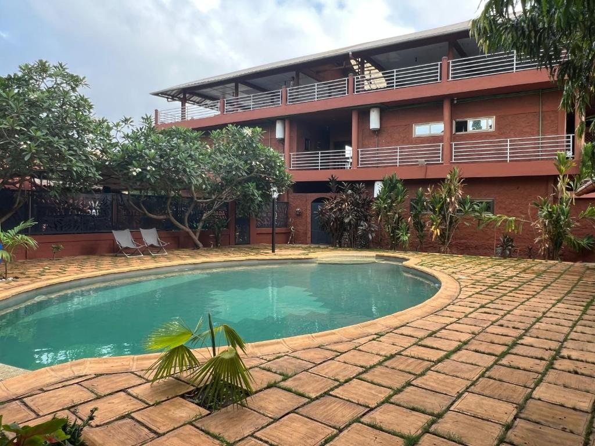
Porto-Novo · D.R.Où dormir · Porto-Novo
Le cocon moderne de Porto-Novo
Les Résidences Ouadada proposent des appartements et des chambres à Porto-Novo, dans un quartier calme, avec l’autonomie d’une résidence et le confort d’un hôtel.
C’est un bon camp de base pour explorer la capitale : musées, mosquée, marché et jardin des plantes sont à courte distance. Le soir, on rentre dans un espace sécurisé, loin de l’animation du centre.
Le conseil SecretScape
Demandez un logement avec cuisine si vous restez plusieurs nuits ; vérifiez l’heure d’arrivée avec la réception.
Quartier Ouadada, Porto-Novo
Près de 80 avis positifs pour l'une des meilleures adresses de Porto-Novo.
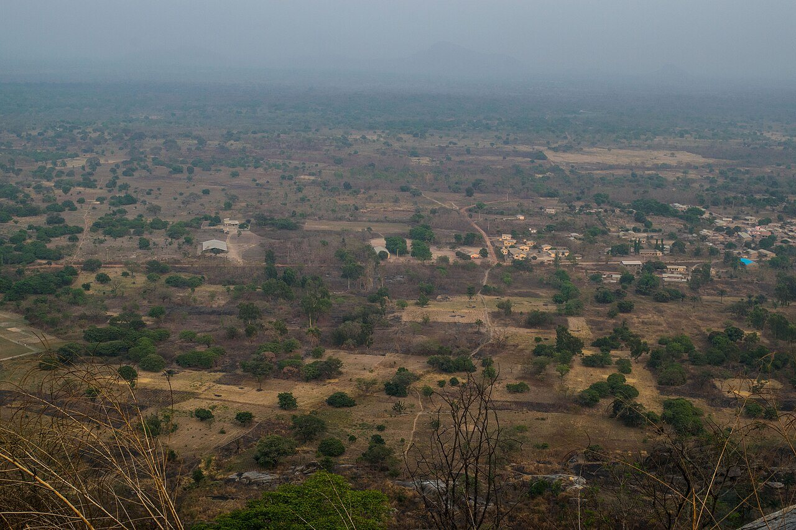
Dassa-Zoumé · Wikimedia CommonsÀ Dassa, le relief change brusquement. Les collines de granit surgissent de la plaine, couvertes de végétation et de lieux de prière. On monte pour la vue, on redescend avec le silence des pèlerinages.
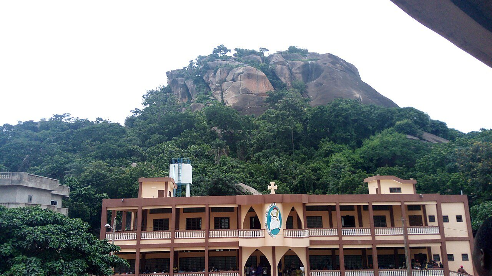
Dassa-Zoumé · Wikimedia CommonsDassa-Zoumé · Collines
Le haut lieu de pèlerinage des collines de Dassa
La Basilique Notre-Dame d’Arigbo domine les collines de Dassa-Zoumé et constitue un lieu de pèlerinage important, notamment lors des grands rendez-vous religieux. Son emplacement en hauteur offre un cadre à la fois spirituel et panoramique.
En montant vers la basilique, on profite d’une vue dégagée sur les environs et d’une atmosphère paisible qui invite au recueillement. Le site est aussi intéressant pour comprendre la place du religieux dans le paysage culturel local. C’est une étape agréable à combiner avec la découverte des collines sacrées, pour une expérience mêlant foi, histoire et paysage.
Le conseil SecretScape
Montez les marches jusqu'à la basilique à l'aube pour profiter de la vue et de la fraîcheur avant les pèlerins.
Colline d'Arigbo, Dassa-Zoumé
Au lever du soleil ou pour le pèlerinage du… · 1 h 30 sur place.
Montez à l’aube pour la fraîcheur et la vue ; le 15 août, le site accueille un grand pèlerinage.
Accessible
Peu fréquenté
Collines · Bénin
Dassa-Zoumé, Collines.
Dassa-Zoumé · Collines
Dix-sept collines et leurs oratoires de prière
Les collines sacrées de Dassa-Zoumé offrent un mélange saisissant de nature, de spiritualité et de panoramas. Ces reliefs granitiques, importants pour les communautés locales, sont des lieux de prière, de mémoire et de contemplation.
L’ascension récompense les visiteurs par une vue dégagée sur les environs, surtout aux premières heures du jour lorsque la lumière est douce et l’atmosphère paisible. On y ressent un calme particulier, renforcé par la dimension symbolique du site. C’est une destination idéale pour ceux qui recherchent une expérience à la fois paysagère et culturelle, au cœur du département des Collines.
Le conseil SecretScape
Grimpez la colline Notre-Dame d'Arigbo à l'aube : les fidèles y montent en chantant, et la lumière rasante dévoile un panorama irréel.
Dassa-Zoumé, département des Collines
Grimpez avec un guide local ; certaines collines sont des lieux de culte, restez sur les sentiers.
C’est une destination idéale pour ceux qui recherchent une expérience à la fois paysagère et culturelle, au cœur du département des Collines.
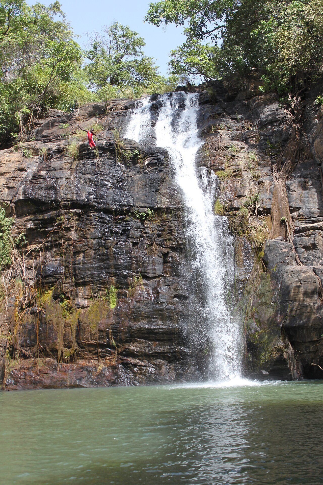
Tanougou · Wikimedia CommonsL’Atacora est un pays de pierre, de falaises et de châteaux de terre. Les tatas somba veillent sur les vallées, les cascades tombent des plateaux, et la piste de la Pendjari ouvre sur les grands espaces.
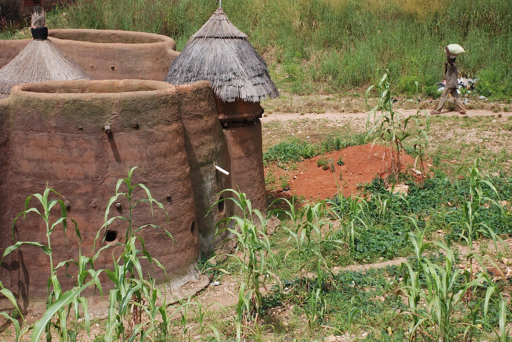
Boukoumbé · Wikimedia CommonsBoukoumbé · Atacora
Des châteaux de terre rouge en pays Somba
Les tata somba de Boukoumbé comptent parmi les trésors architecturaux les plus remarquables du Bénin. Ces habitations forteresses en terre, pensées pour la vie familiale, la protection et les pratiques culturelles, témoignent d’un savoir-faire ancestral unique.
En parcourant les villages, vous découvrez l’organisation ingénieuse de ces constructions, les matériaux locaux utilisés et le lien profond entre habitat, identité et territoire. La rencontre avec les habitants, lorsqu’elle se fait avec respect, enrichit fortement l’expérience. Ce site offre bien plus qu’une visite : c’est une immersion dans une culture vivante, au cœur des paysages de l’Atacora.
Le conseil SecretScape
Passez par un guide du village de Dikoumé ou Tikony, et offrez-vous d'abord le temps d'échanger avant de photographier les habitants.
Villages Somba, commune de Boukoumbé
Saison sèche · 2 h 30 sur place.
Visitez en saison sèche et demandez l’accord des habitants avant d’entrer dans une cour.
Secret d’initié
Peu fréquenté
Atacora · Bénin
Tanougou, Atacora.
Tanougou · Atacora
Chute d'eau secrète au cœur du parc de la Pendjari
Les cascades de Tanougou constituent une pause rafraîchissante et spectaculaire au cœur de l’Atacora. L’eau dévale la roche dans un cadre naturel préservé, entouré de végétation et de reliefs qui invitent à la détente comme à l’exploration.
Sur place, on profite d’un moment de baignade, du calme du site et de la beauté du paysage, particulièrement saisissante lorsque le débit est fort. L’accès demande un peu d’effort, mais la récompense est à la hauteur. C’est une excellente étape à combiner avec la découverte de la région de la Pendjari, pour vivre une expérience nature complète et ressourçante.
Le conseil SecretScape
Après la piste depuis le carrefour de la Pendjari, descendez le sentier à pied sur 400 m : la baignade se situe sous la cascade, loin du bivouac.
Tanougou, commune de Tanguiéta
La baignade est possible en saison des pluies ; prévoyez des chaussures qui tiennent sur la roche mouillée.
C’est une excellente étape à combiner avec la découverte de la région de la Pendjari, pour vivre une expérience nature complète et ressourçante.
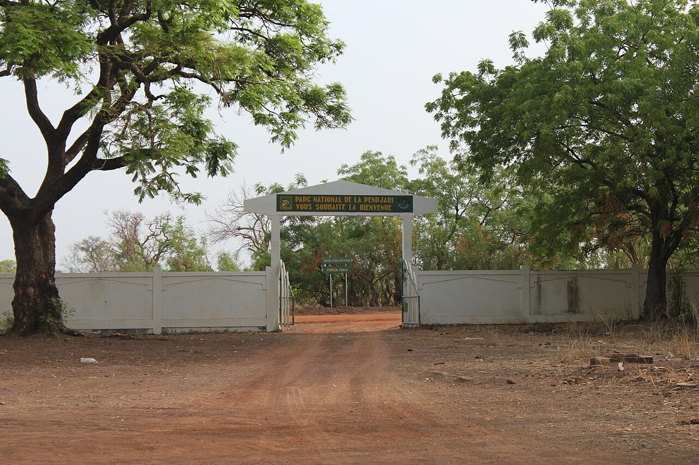
Tanguiéta · Wikimedia CommonsTanguiéta · Atacora
Safari discret au royaume des éléphants
Le Parc National de la Pendjari est l’un des grands sanctuaires naturels d’Afrique de l’Ouest. Ses vastes savanes, ses points d’eau et ses paysages ouverts offrent un cadre exceptionnel pour observer la faune dans un environnement encore préservé.
Au fil des pistes, vous pouvez apercevoir éléphants, antilopes, oiseaux et d’autres espèces emblématiques, accompagnés par des guides qui connaissent parfaitement le terrain. Chaque sortie réserve son lot de surprises, entre silence, lumière dorée et scènes de vie sauvage. C’est une expérience forte pour les amoureux de nature, de grands espaces et d’aventure, à vivre au rythme de la savane béninoise.
Le conseil SecretScape
Optez pour une piste en fin d'après-midi avec un guide du parc : c'est le meilleur moment pour croiser les éléphants aux abreuvoirs.
Parc National de la Pendjari, commune de Tanguiéta
De décembre à mai · 5 h sur place.
Réservez un guide et un 4x4 à l’avance ; partez tôt, les animaux sont plus actifs au lever du jour.
Accessible
Peu fréquenté
Atacora · Bénin
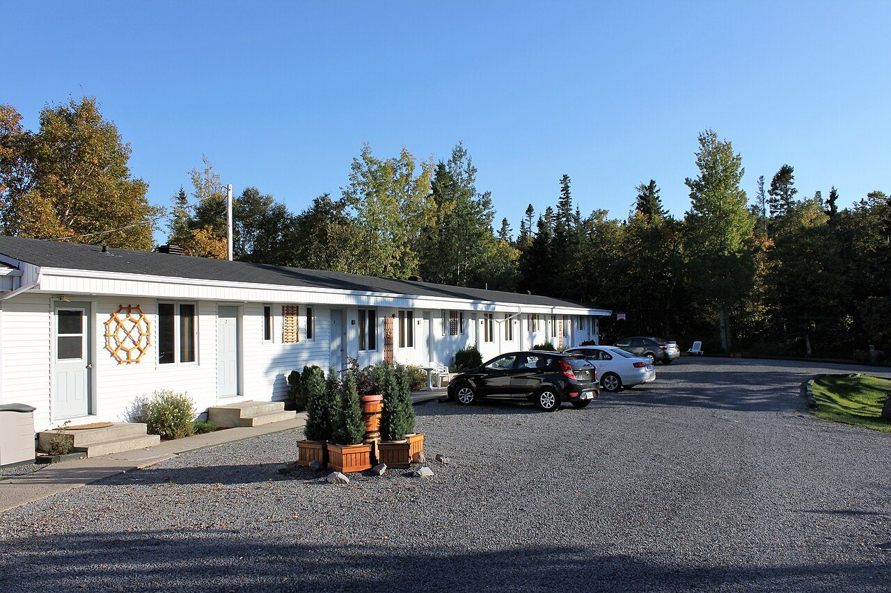
Tanguiéta · Wikimedia CommonsOù dormir · Tanguiéta
Une halte à Tanguiéta
Le Baobab est l’étape historique de Tanguiéta, sur la route de la Pendjari. Chambres simples, restaurant, jardin : tout est pensé pour une nuit de repos avant ou après le parc.
On y croise des voyageurs revenus du safari, des guides et des familles. L’adresse n’a rien de luxueux, mais elle rend un service précieux : elle rend le nord accessible.
Le conseil SecretScape
Réservez en saison sèche, période de safari ; demandez une chambre loin de la route.
Tanguiéta, Bénin
Passez directement à la réception en matinée : c'est souvent le moment le plus tranquille.
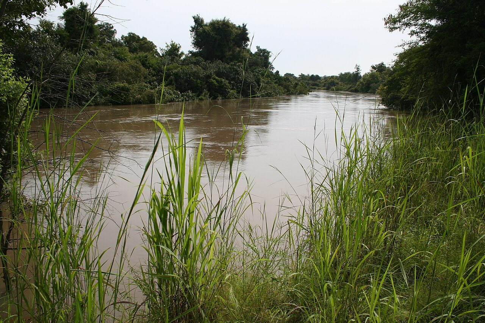
Karimama · Wikimedia CommonsAu nord, le pays s’élargit. Les savanes du W abritent éléphants et antilopes, Nikki perpétue la mémoire des cavaliers wasangari, et les Tanéka conservent leurs objets et leurs récits dans une banque culturelle unique.
Karimama · Alibori
La réserve transfrontalière UNESCO
La partie béninoise du complexe W-Arly-Pendjari, classé au patrimoine mondial de l'UNESCO. Le fleuve Niger y dessine un « W » majestueux : éléphants, lions, buffles et de nombreux oiseaux peuplent cette savane soudanienne encore sauvage.
La réserve transfrontalière UNESCO
Le conseil SecretScape
Accès long depuis Natitingou ou Kandi : prévoyez un 4x4, des provisions et idéalement un guide du parc. Un safari au W reste une aventure rare et préservée.
Partie béninoise du parc W, commune de Karimama, Alibori
En saison sèche · 8 h sur place.
L’accès se prépare depuis Karimama ; prévoyez deux jours et un véhicule tout-terrain avec guide.
Secret d’initié
Peu fréquenté
Alibori · Bénin
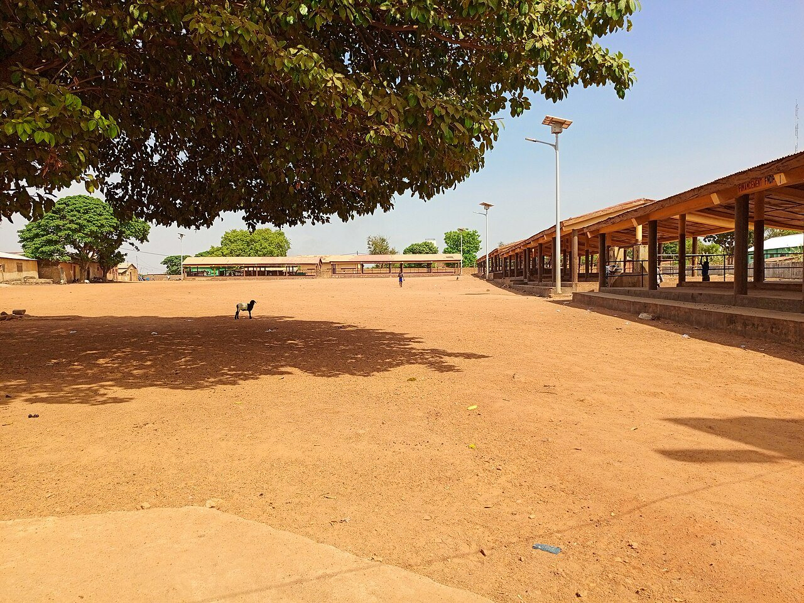
Nikki · Wikimedia CommonsNikki, Borgou.
Nikki · Borgou
Le grand rendez-vous des cavaliers de Nikki
Chaque année, la fête de la Gaani rassemble à Nikki les cavaliers, les dignitaires et les communautés du Borgou. L'arène et ses abords portent la mémoire de cette célébration fastueuse, l'un des plus grands rassemblements culturels du Bénin.
Le conseil SecretScape
Si vous venez hors Gaani, demandez à voir les écuries et les costumes de cérémonie : ils sont conservés par les familles de cavaliers.
Arène impériale, Nikki
L’arène se visite hors fête ; renseignez-vous sur les dates de la Gaani, elles changent chaque année.
Chaque année, la fête de la Gaani rassemble à Nikki les cavaliers, les dignitaires et les communautés du Borgou.
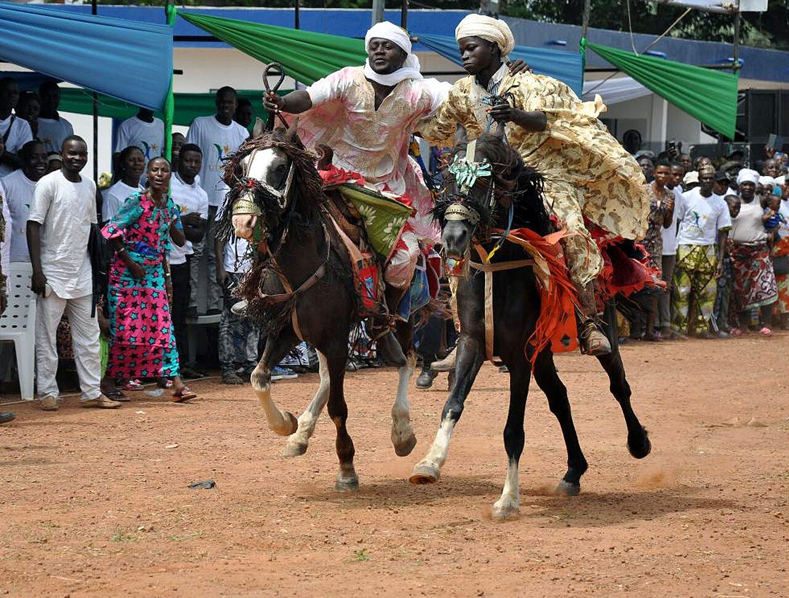
Nikki · Wikimedia CommonsNikki · Borgou
La capitale des Baatonu du Borgou
Le Palais Royal de Nikki et le Musée Danri offrent une plongée dans l’histoire du peuple baatonu et de la chefferie Wasangari, figures importantes du Borgou. À travers objets de cour, armes, symboles et récits, le lieu retrace l’organisation politique et culturelle de cette région.
La visite permet de mieux comprendre les traditions locales, l’héritage des cavaliers et le rôle historique de Nikki. C’est une découverte qui enrichit la lecture du nord-est du Bénin, souvent moins connu mais très profond sur le plan culturel. Pour les voyageurs curieux d’histoire et d’identités régionales, c’est une étape à forte valeur patrimoniale.
Le conseil SecretScape
La visite du palais se fait avec un membre de la cour : renseignez-vous à l'entrée du musée pour les jours d'audience royale.
Quartier Danri, Nikki
En saison sèche · 1 h 30 sur place.
La visite se fait avec un guide du palais ; demandez l’autorisation avant de photographier les objets rituels.
Bien caché
Peu fréquenté
Borgou · Bénin
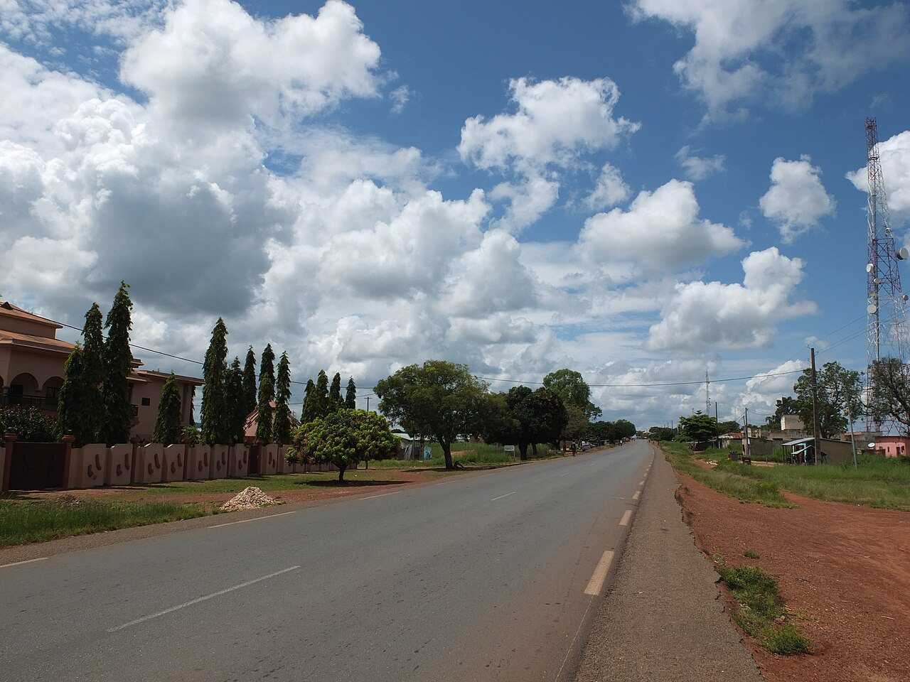
Copargo · Wikimedia CommonsCopargo, Donga.
Copargo · Donga
Le musée vivant de la civilisation tanéka
Unique au Bénin, cette banque culturelle est un musée conservatoire de la civilisation tanéka : objets de famille, masques et artefacts y sont « déposés » comme en banque. Elle s'étend sur un jardin botanique de dix hectares à Tchouchouhou.
Le conseil SecretScape
La visite combine musée et jardin botanique : prévoyez une demi-journée et un guide local pour les explications.
Copargo, département de la Donga
La banque culturelle se visite sur rendez-vous ; combinez avec le jardin botanique voisin.
Unique au Bénin, cette banque culturelle est un musée conservatoire de la civilisation tanéka : objets de famille, masques et artefacts y sont « déposés » comme en banque.
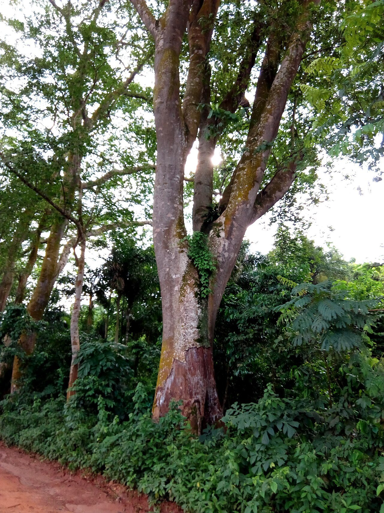
Pobè · Wikimedia CommonsLe Couffo et le plateau sont les terres discrètes du guide. Un palais de chefferie, une forêt sacrée, des villages qui n’attendent pas les visiteurs : c’est le Bénin de ceux qui prennent le temps de sortir de l’axe.
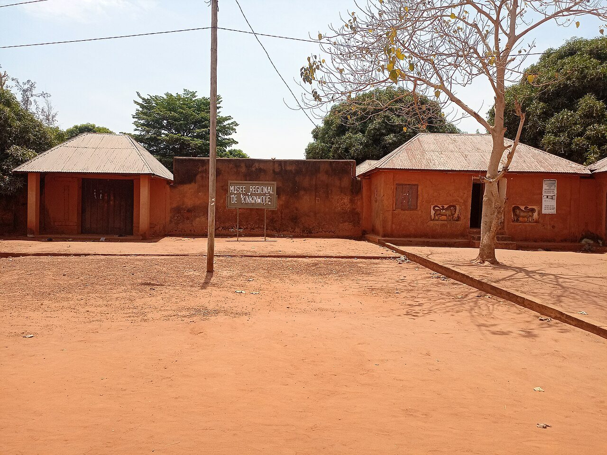
Djakotomey · Wikimedia CommonsDjakotomey · Couffo
La mémoire du royaume dans un écrin de terre
Le musée régional de Kinkinhoué conserve les objets, les récits et les insignes du pouvoir royal du Couffo. Installé dans l'enceinte de la chefferie, il raconte l'histoire d'un royaume discret, longtemps absent des guides touristiques.
La mémoire du royaume dans un écrin de terre
Le conseil SecretScape
Demandez au conservateur de vous montrer les pièces réservées aux cérémonies : elles ne sont pas toujours exposées et méritent un récit guidé.
Kinkinhoué, commune de Djakotomey
En semaine · 1 h 15 sur place.
La visite se fait sur rendez-vous ; appelez la chefferie avant de venir, le musée n’est pas toujours ouvert.
Secret d’initié
Peu fréquenté
Couffo · Bénin
Pobè, Plateau.
Pobè · Plateau
Les arbres géants du pays nagot
Une forêt sacrée où quelques arbres géants, protégés par les communautés nagot, abritent rites et interdits. Le silence, les racines immenses et les récits des gardiens en font l'un des lieux les plus mystérieux du Plateau.
Le conseil SecretScape
Ne partez pas seul : demandez au chef de quartier l'autorisation et un guide, et évitez de photographier les autels sans accord.
Forêt sacrée d'Igbo Akpa, Pobè
Entrez avec un guide du village ; la forêt est un lieu sacré, ne cueillez rien et restez sur le sentier.
Une forêt sacrée où quelques arbres géants, protégés par les communautés nagot, abritent rites et interdits.
Carnet pratique · Itinéraires
Le Bénin se parcourt du sud au nord en une longue journée de route. Ces trois itinéraires sont des squelettes : ils indiquent les étapes, les nuits et les temps forts. À vous d’ajouter les détours, les siestes et les marchés.
Cotonou · Ganvié · Ouidah · Grand-Popo
Quatre jours pour comprendre le pays par sa côte : la ville, la lagune, la mémoire et l’embouchure du Mono. Idéal pour un premier séjour ou un long week-end.
Cotonou · Ouidah · Abomey · Dassa · Atacora
La traversée classique, celle qui fait passer du golfe de Guinée aux plateaux de l’Atacora. Deux jours de côte, deux jours d’histoire, trois jours de route du nord.
Le littoral · le Zou · l’Ouémé · l’Atacora · le Borgou
Dix jours pour ajouter Porto-Novo, les collines de Dassa, la Pendjari et le pays Tanéka. Un itinéraire plus lent, avec deux vraies journées de safari.
Les temps de route sont donnés à titre indicatif, en voiture privée. Ajoutez 20 à 30 % en saison des pluies. Les nuits sont proposées dans les villes-étapes ; le répertoire en fin d’ouvrage donne les adresses.
Carnet pratique · Itinéraire
Le format court : Cotonou, la lagune, Ouidah et l’embouchure du Mono. Une boucle sans longue route, à faire en voiture privée ou en taxis-brousse pour les plus courageux.
Prolongez par Abomey, Dassa et l’Atacora : l’itinéraire de sept jours ajoute trois étapes et deux jours de route.
Ajoutez une nuit à Grand-Popo pour prendre le bateau sur le lac Toho et voir les caïmans sacrés au coucher du soleil.
Carnet pratique · Itinéraire
Le grand tour classique, pensé pour prendre le temps : deux jours sur la côte, un détour par l’histoire, puis la route du nord jusqu’aux savanes. Toutes les étapes sont reliées en voiture avec chauffeur.
Cotonou · Ganvié · Ouidah · Grand-Popo. L’essentiel du littoral, sans le nord.
Ajoutez Porto-Novo, la Pendjari et le pays Tanéka. Le guide détaille les étapes et les temps de route.
Carnet pratique · Itinéraire
Le parcours complet : le littoral, le Zou, l’Ouémé, l’Atacora et le Borgou. Deux journées de safari, une nuit à Porto-Novo, et le temps de ralentir entre deux étapes.
Si le temps manque, gardez le littoral et le Zou, puis rentrez par la côte.
Une nuit de plus à Tanguiéta permet de faire le safari du matin et les cascades l’après-midi.
Carnet pratique · Agenda
Le Bénin vit au rythme de ses cérémonies. Voici les rendez-vous qui peuvent justifier à eux seuls un voyage — et qui demandent, parfois, de réserver plusieurs mois à l’avance.
Concerts et DJ sets pour finir l’année au rythme de Cotonou.
DÉCEMBRE 2026 · weloveyafestival.comLes Vodun Days, le premier rendez-vous international autour des arts, de la culture et de la spiritualité Vodun.
JANVIER 2027 · vodundays.bjMasques, danses et processions dans les rues de Porto-Novo.
AOÛT 2027 · festivaldesmasques.bjSports traditionnels et culture en fête, sur plusieurs jours.
AOÛT 2027 · jistna.bjLes dates de certaines fêtes sont annoncées tardivement. Vérifiez auprès de l’office de tourisme ou des organisateurs avant de bloquer vos billets.
Carnet pratique · Calendrier
Huit rendez-vous, classés dans l’ordre du calendrier. Les dates annoncées sont indicatives : elles peuvent varier selon les années et les décisions des organisateurs.
Vodun Days à Cotonou et Ouidah : le pays se met à l’heure des cultures vodun. Réservez tôt.
Festival des Masques à Porto-Novo et pèlerinage d’Arigbo à Dassa. Chaleur et pluies courtes.
Weloveya ouvre la saison des festivals, entre plage et concerts. La saison sèche s’installe, les routes du nord rouvrent.
Carnet pratique · Répertoire
Le guide ne retient que cinquante lieux, mais le répertoire rassemble toutes les adresses de la base SecretScape : sites, plages, tables, bars, hôtels et transports. Utilisez-le pour composer vos propres détours.
Index
Les cinquante fiches par ordre alphabétique. Les numéros renvoient aux pages imprimées.
Sites & plages — 32
Tables — 12
Hôtels — 6
Cotonou — 12
Ouidah — 12
Grand-Popo — 6
Abomey — 3
Porto-Novo — 5
Dassa — 2
Atacora — 4
Borgou — 4
Couffo — 2
Accessible — 18
Bien caché — 21
Secret d’initié — 11
Crédits & mentions
Images sous licence Creative Commons — crédits complets sur secretscape.com/crédits.
Marché Ganhi · Place de l’Amazone · Plage de Fidjrossè · Village Lacustre de Ganvié · Temple des Pythons d'Ouidah · Musée International du Vodun · Plage de Djégbadji (Ouidah) · Plage d'Avlékété · La Bouche du Roi · Lac Toho & Rivage d'Ahozon · Grande Plage de Grand-Popo · Presqu'île d'Avlo · Palais Royaux d'Abomey · Ateliers de bas-reliefs d'Abomey · Village souterrain d'Agongointo · Musée Honmè, Palais Royal de Porto-Novo · Grande Mosquée de Porto-Novo · Poterie d'Adjarra · Plage de Sèmè-Kpodji · Basilique Notre-Dame d'Arigbo · Collines sacrées de Dassa-Zoumé · Tata Somba de Boukoumbé · Cascades de Tanougou · Piste des Grands Espaces de la Pendjari · Parc national W (Bénin) · Arène de la Gaani · Palais Royal de Nikki & Musée Danri · Banque Culturelle Tanéka · Palais royal et musée de Kinkinhoué · Forêt sacrée de Pobè · Hôtel Baobab de Tanguiéta
Images libres de droits, utilisées pour illustrer les lieux lorsque aucune photographie propre n’était disponible.
Fondation Zinsou · Villa Kaya Cotonou · Le Restaurant Bar du Musée du Soleil · Hakuna Matata Restaurant Grillades · Kolè · Alozo Terrasse
Images fournies par SecretScape ou ses partenaires. Tous droits réservés.
Chez Raphaël à Ganvié · Sofitel Cotonou Marina Hôtel & Spa · Au cœur de Ouidah · Guesthouse Bambou Beach
Images issues de la base SecretScape ; les droits doivent être confirmés avant toute réédition imprimée.
Porte du Non-Retour & Route des Esclaves · Jaaba – Grill & Bar · Face à la Mer · Cali Cali · Rousski Dom · Le Petit Four · La Boca del Rio · Maison Rouge Cotonou · Résidences Ouadada
SecretScape — Édition 2026. Guide numérique au format A4. Direction éditoriale : SecretScape Studio. Typographies : Playfair Display (SIL Open Font License) et Poppins (SIL Open Font License).
Ce guide est une œuvre originale protégée par le droit d’auteur. Toute reproduction, diffusion ou revente, même partielle, est interdite sans autorisation écrite de SecretScape.
Les informations pratiques (horaires, tarifs, accès, coordonnées) ont été vérifiées au moment de la rédaction. Elles peuvent évoluer : confirmez toujours auprès des lieux avant de vous déplacer.
Les lieux sacrés, les villages et les personnes photographiées ne sont pas des attractions. Demandez l’autorisation, respectez les usages et ne laissez rien derrière vous.
secretscape.com
contact@secretscape.com
Édition 2026 · Version 1.0
© SecretScape — Tous droits réservés
Édition 2026 · 79 pages
Le Bénin ne se visite pas.
Il se découvre.
Un guide pensé pour le voyageur curieux : à feuilleter avant de partir, à garder sous la main pendant la route, à transmettre à ceux qui prendront le même chemin.
Guide numérique · Format A4 · Édition 2026
© SecretScape — Tous droits réservés